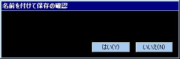

アクションゲーム制作ソフト アクションエディター4
ここでは、アクションゲーム制作ソフト「アクションエディター4」がダウンロードできます。
アクションエディター4製のゲーム集もございます。
アクションエディター4のダウンロードへ
ゲーム集へ
アクションエディター4のダウンロード
アクションエディター4で制作したゲームは、各自ホームページ等で気軽に配布できます。
詳細は付属の「ゲームの配布について.html」（旧名「二次配布について.html」）をご覧下さい。
| アクションエディター4 最新版をダウンロード(zip) | |
|---|---|
| バージョン | 10.20 |
| ジャンル | アクションゲーム制作ソフト |
| 対象人数 | 1人 |
| ソフト種別 | フリーソフト（無料） |
| 動作確認 | Windows10、8、7、Vista、XP |
| 初期版公開 | 2008/9/26 |
| 最新版公開 | 2020/12/24 |
| コメント |
アクションエディターシリーズ最新作です。 プログラミング不要で2Dアクションゲームが楽しく作れます。 高い開発効率となかなかの自由度があります。 アクションゲームだけでなくアクションRPG、シューティングゲーム、パズルゲーム等の制作も可能です。 |
● 各バージョンの更新履歴とダウンロード
- 更新履歴の見方
- 「◆エディター：～」はエディタープログラム(Editor_v*.exe)やデフォルトデータの更新。旧バージョンのデータを引き継いでもゲーム中の動作が変わることはありません。
「◆ゲーム：～」は主にゲームプログラム(Game_v*.exe)の更新。エディタープログラムが更新されている場合でもゲームに影響するものであれば「◆ゲーム：～」に属します。
旧バージョンのデータを引き継ぐ場合、「◆ゲーム：～」と書かれた更新がされているとゲーム中の動作が変わってしまう可能性があります（たまにあるかも）。
-
v10.20 2020/12/24
◆ゲーム：アイテムから「メッセージ」コマンドでキャラ変数を表示しようとすると強制終了するバグを修正。
◆ゲーム：「ステータスの操作」コマンドで、キャラのX座標・Y座標を代入しても正常な位置に移動できないバグを修正。
◆ゲーム：「ステータスの操作」コマンドで左辺が「ステータス」のとき戻り値が正常に代入されないバグを修正。
-
v10.10 2020/9/26
◆その他：一部のアンチウィルスソフトでKeyConfig.exeが脅威と見なされてしまう不具合の一部を修正。
※この修正はまだ不完全であり、まだ誤検出される要素が残っています。次のバージョンではより問題のないものを提供したいですが上手くいくかわかりません。いったん不完全な形で公開する理由を話すと長くなるので割愛…
※2020/10/6追記
結論として、この誤検出問題を完全に解決することができませんでした。
「アクションエディター4」バージョン9.67～10.00のKeyConfig.exe（この時期はファイル名が「KeyConfig_v2.12.exe」となっている）を、OPSWAT（https://metadefender.opswat.com/）でマルチスキャン（38種類のアンチウィルスエンジンで一斉スキャン）すると、
・Kaspersky
・RocketCyber
・Filseclab
の3社が提供するアンチウィルスエンジンで脅威が誤検出されておりました。
このうちKasperskyはバージョン10.10で誤検出されないように修正いたしました。
残る2社についてはメールで検体を添付して問い合わせました。
RocketCyber社からは「最新のエンジンでは誤検出されませんでした。OPSWATに最新のエンジンが採用されるまで待ってください」という旨の回答をいただきました。2020年10月6日現在OPSWATで再検査したところ脅威が検出されたので、まだ時間がかかるようです。
Filseclab社へは2020年9月29日に問い合わせたのですが未だ返信がきておりません…
正直、現時点でこの問題について自分ができることはやり尽くした感があります。
どうしてもまだ脅威の誤検出でお困りの場合、検出されるエンジンを提供している会社に各自問い合わせてみてください（基本英語になりますが）。別に開発者でなくても問い合わせは可能だと思いますので。
ご不便をおかけして申し訳ありません。
-
v10.00 2020/7/2
◆ゲーム：「ピクチャーの表示」コマンドで、拡大率の縦方向と横方向を別々に設定できるようになる。
◆ゲーム：「ピクチャーの表示」コマンドで、左右反転・上下反転機能を実装。
-
v9.97 2020/3/9
◆ゲーム：ストーリーモードで「はじめから」を選択したときに出る保存先を選択するウィンドウを表示せずに保存先を１番で固定する設定を実装。これを採用したい場合はメインメニューから「プロジェクト」＞「システム」＞「2」タブの「オートセーブ初期設定」で「保存先は1番で固定、常時オートセーブON」にしてください。タイトル画面ではセーブデータが存在しないときは「はじめから」のみが表示され「つづきから」は隠れます。逆にセーブデータが存在するときは「つづきから」のみが表示されます。また、ワールドマップメニューでは「セーブ」と「オートセーブ」コマンドが表示されなくなります。
-
v9.96 2019/11/9
◆エディター：パレットウインドウなどの一部のウインドウの右クリックメニューで、画面内にある全てのウィンドウの枠の外にマウスポインタがある状態でメニューコマンドをクリックしても、すぐには実行されず次にマウスポインタがウィンドウ枠内に入ったときに初めて実行されるバグを修正。
-
v9.95 2019/10/26
◆ゲーム：バージョン9.91から威力0や衝撃0のショットが当たったときにダメージ無効化用の効果音が再生されてしまうバグを修正。仕様では威力1以上や衝撃0以外のショットが当たったときにキャラの防御力や無敵状態によってダメージや衝撃が無効化された時のみに再生されるので、そのように修正しました。
◆ゲーム：リプレイの再生で選択肢のあるメッセージが表示されるとき、キー入力で選択を変更できてしまうバグを修正。
-
v9.94 2019/10/2
◆ゲーム：バージョン9.93で、ゲームプログラムファイル(Game_v*.exe)及びエディタープログラムファイル(Editor_v*.exe)がバージョン9.92のままだったので再更新。
-
v9.93 2019/10/1
◆ゲーム：バージョン9.91と9.92で「システム」の設定の「シンボル画像の表示に対応」の変更が保存されないバグを修正。
-
v9.92 2019/9/21
◆ゲーム：デフォルトの画像「Accessory.bmp」で、画像右上のチャレンジモードにおけるクリアマークを「○」文字から星にする。従来の「○」文字だとフォントに影や縁をつけたときに浮いてしまうので変更しました。
◆その他：「ゲームの配布について.html」の更新。オンラインヘルプの「パッケージングについて」へのリンクを追加しました。
-
v9.91 2019/8/24
◆ゲーム：「システム」の設定で、フォントに縁をつけられるようになりました。
◆ゲーム：「システム」の設定に「防御力で減らせるダメージの下限」を実装。例えばこれを1にすると体当たりやショットの威力より防御力が高くても１ダメージは受ける。体当たりやショットの威力に対する％で指定することも可能。
◆ゲーム：「システム」の設定に「衝撃耐性で減らせる衝撃の下限」を実装。例えばこれを1にすると体当たりやショットの衝撃より衝撃耐性が高くても1(hbl)は吹っ飛ぶ。体当たりやショットの衝撃に対する％で指定することも可能。
◆ゲーム：「システム」の設定で、防御力や無敵状態によってダメージが無効になるときの効果音を設定できるようになる。また、その効果音素材として「ダメージ無効.wav」を同梱しました。旧バージョンから今回のバージョンに引き継いだ場合は、ダメージ無効時でも「ダメージ.wav」が再生される設定になっているので必要なら「ダメージ無効.wav」などに変更してください。
◆その他、小さな更新。
-
v9.88 2019/8/10
このバージョンからβ版 → 正式版（安定版） になりました。
◆ゲーム：バージョン9.87βで、「ワープ」コマンドの戻り値がおかしいバグを修正。ワープ失敗時は2にならないといけないのに1になっていました。
◆エディター：プロジェクトオプションに「一部の環境で起こる「コモンパレットとステージの変更を保存せずにテストプレイをするとゲームがエディターの後ろに隠れる」不具合が出ないようにする」チェック項目を実装。これにチェックを入れると同不具合を防止できますが、テストプレイ時に自動保存がされなくなり手動保存が強制されるようになります。
-
v9.87β 2019/8/1
◆ゲーム：キャラエフェクトの「波（横）」と「波（縦）」で、「開始幅」か「終了幅」が0のときに波の高さが滑らかに変化するようになる。従来の仕様だと波の静止時間が長い（「往復実行」するとわかりやすい）ので多少改善しました。それでもまだ波の静止時間が長いと感じられるなら幅を0から1に変更するなどしてください。
◆エディター：バージョン9.80β以降において、アイテムで「ワープ」コマンドを設定しようとしたり既に「ワープ」コマンドが設定されたアイテムを編集しようとすると強制終了するバグを修正。
-
v9.86β 2019/7/28
◆ゲーム：バージョン9.10以降で、データベース「キャラ専用bmp」に横幅が512ピクセル以外の画像を使用すると、コマがずれて表示される不具合を修正。元々はキャラ専用bmp画像の横幅は512固定なのが仕様でしたが、バージョン9.10から密かに512以外の横幅にも対応していました…いや、対応したつもりでしたが、実際にはエディターでのみ対応していただけでゲームの方はバージョン9.10未満と同じ仕様で画像が横幅512であるという前提で表示するコマが決定されていました。これによって、横幅が512以外の画像を使用した場合にコマがずれて表示されていたわけですが、今回これを修正しました。今回の修正に伴って、システムの設定に「横幅が512ピクセル以外のキャラ専用bmp画像を使用したときの表示はバージョン9.85β以前の動作を適用する」を実装しました。旧バージョンのデータを今回のバージョンに引き継いだ場合、この設定は有効になっています。
◆ゲーム：横幅が512ピクセル以外のキャラ専用bmp画像に正式に対応しました。画像の横幅・縦幅はともに32の倍数にすること（キャラ自体の大きさが横も縦も32の倍数なので普通に描けば問題なし）。
◆ゲーム：オプションモードの「BGM」で、0～7の8段階で音量が調節できるようになる。従来のBGM「ON」の音量は「7」に相当するので、BGMの音量を下げられるようになったということです。「SE」は0～10の11段階ですが、「BGM」は訳あって0～7の8段階です。
◆ゲーム：オプションモードの「SE」で、4以上の音量が少し下がる。
◆ゲーム：バージョン9.66以降で描画モードがDirectDrawのとき、ゲーム起動時にウインドウサイズが640×480(100%)ではない場合でも描画範囲が640×480になっていたバグを修正。DirectDraw自体もう推奨していないですし、ウインドウを少しでも動かすなりすれば解消されるバグではありましたが、初回起動の直後にも起こりやすいバグで印象が悪いので修正しました。
-
v9.85β 2019/7/24
◆ゲーム：「メッセージ」コマンドで「#R*選択肢を設定」にチェックを入れた状態で表示タイプを「進行キーが押されるまで表示」以外にすると、他の選択肢つきメッセージの表示中にカーソルが表示されてしまうバグを修正。なお、「進行キーが押されるまで表示」にしないと選択肢が出ないのは仕様です。
◆ゲーム：「アレンジ」コマンドでフロー変数を使用できるようになる。
◆ゲーム：「ブロック召喚」と「キャラ召喚」コマンドの戻り値で実際の召喚数を取得できるようになる。召喚先がステージ外の場合はブロック召喚では召喚失敗になり召喚数にカウントされませんが、キャラ召喚では召喚失敗にはならず召喚数にカウントされます（キャラなら召喚後の移動によってステージ外からステージ内に入ってくる可能性もあるためこのような仕様となっている）。
◆ゲーム：「メッセージ」コマンドでキャラ変数とフロー変数の値を表示できるようになる。フロー変数は「#f1.」「#f2.」という風にアルファベットではなく変数番号で指定する必要がある点と、自動更新には未対応であることに注意。
◆ゲーム：「メッセージ」コマンドにおける選択肢のデフォルトカーソル位置の設定で、キャラ変数とフロー変数の値を条件にできるようになる。フロー変数は「f1」「f2」という風にアルファベットではなく変数番号で指定する必要がある。
◆エディター：「コードの実行」コマンドで、フロー変数は「rA」「rB」ですが「fA」「fB」でも認識されるようになる。「メッセージ」コマンドのフロー変数の表示では「f」なので、そちらと統一する意味で今後はどちらかというと「コードの実行」でも「fA」「fB」の方を推奨します。
◆エディター：「コードの実行」コマンドで、計算過程で小数点以下が切り捨てられることと0除算をしてはいけないことをエディター上で説明する。重要なことですが、今までヘルプでしか説明していなかったので。
◆その他、小さな更新。
-
v9.82β 2019/7/17
◆ゲーム：バージョン9.80βと9.81βで、１回死亡した後の次のプレイでポーズメニューを１度も出さずに（スペースキーを１度も押さずに）ステージをクリアするとリプレイの自動保存に失敗するバグを修正。
-
v9.81β 2019/7/16
◆ゲーム：バージョン9.80βで、コマンドの戻り値の代入先（「ステータスの操作」などで指定できる「戻り値(A,B)」）の名称を「戻り値(A,B)」ではなく「フロー変数(A,B)」に変更。これは変数と同じように利用できるので「フロー変数」とした方がわかりやすいだろうということで。キャラ変数がキャラごとに独立しているようにフロー変数もフローごとに独立しています（1つのフローにつきフロー変数A,B1つずつ存在します）。
◆ゲーム：バージョン9.80βで、戻り値に対応したコマンドでフロー変数に戻り値を代入するときに関係のないフロー変数にも0が代入される仕様をやめる。例えばワープの場合、フロー変数Aに1(成功) or 2(失敗)が代入されると同時に関係のないフロー変数Bにも0が代入されていましたが、このバージョンからはフロー変数Bの値は変更されません。今回の修正に伴って、システムの設定に「フロー変数へのコマンドの戻り値の代入はバージョン9.80βの動作を適用する」チェック項目を実装しました。9.80βのデータを今回のバージョンに引き継いだ場合はこの設定は有効になっていますので、なるべくチェックを外すことを推奨します。
◆ゲーム：アイテムの「効果」でコマンドの戻り値を受け取ろうとすると強制終了するバグを修正。
◆ゲーム：アイテムにもフロー変数を実装して戻り値を受け取れるようにする。アイテム取得時の「効果」のコマンドリストを1つのフローとみなして、アイテムにもフロー変数を実装しました。
◆ゲーム：「メッセージ」コマンドで、「#R1.#S1.」のように選択肢文字の直後に変数を表示しようとしても変数が表示されないバグを修正。
◆エディター：「コードの実行」コマンドで、「rA」「rB」(フロー変数A,B)を代入先にするとエラーが出るバグを修正。
◆その他、小さな更新。
-
v9.80β 2019/7/13
◆ゲーム：「メッセージ」コマンドに選択肢機能を実装。
◆ゲーム：コマンドの戻り値を実装。戻り値とはコマンドの実行結果を数値にしたもので、それを「ステータスの操作」コマンドで変数に代入するなどして利用できます。以下のコマンドが戻り値に対応しています。
・フローの操作
戻り値A：操作が成功したら1、操作が失敗したら2
・メッセージ
戻り値A：プレイヤーが選んだ選択肢
・ワープ
戻り値A：ワープが成功したら1、ワープが失敗したら2
・ターゲットの設定
戻り値A：ターゲットが存在するなら1、ターゲットが存在しないなら2
戻り値B：ターゲットが変更されたら1、ターゲットがそのままなら2
・ステータスの操作
戻り値A：操作が成功したら1、操作が失敗したら2
戻り値B：値の変化量
・ステータスの操作2
戻り値A：操作が成功したら1、操作が失敗したら2
・消滅
戻り値A：キャラの消滅数
戻り値B：ショットの消滅数
ヘルプにも戻り値の解説を追加しました。
◆ゲーム：F2キーで１つ前のプレイをリプレイファイルとして保存する機能がありますが、１つ前ではなく最新のプレイを保存してしまうバグを修正（F1キーとF2キーが同じになっていた）。これはバージョン9.50～9.67で起こるバグでした。
◆ゲーム：バージョン9.00で実装されたフローのタイミング「ダメージを受けた時（受けたダメージが1以上）」、「衝撃を受けた時（受けた衝撃が1以上か-1以下）」、「アタックでダメージを与えた時（与えたダメージが1以上）」、「アタックで衝撃を与えた時（受けた衝撃が1以上か-1以下）」の4種が「タイミングに関わったキャラをターゲットにする」設定に対応していなかったバグを修正。
◆ゲーム：リプレイモードでバージョン9.20以上のリプレイファイルを再生した後で、「つづきから」でバージョン9.20未満のセーブデータを選択すると「ステージが読み込めません」と出てロードに失敗する場合があるバグを修正。なお、このバグに遭遇してもゲームを再起動すればロードできました。
◆ゲーム：ステージの設定に「リプレイの保存を許可する」チェック項目を実装。例えばオープニングやエンディング用のステージはこのチェックを外すと（特にリプレイの自動保存機能で）無駄なリプレイファイルを減らせます。
◆ゲーム：タイトル画面の前にプレイするステージ（「System.ini」の「FreeStage=」)で、画面下部に「スペースキーでしゅうりょう」や「F3キーでランキングへ登録」といったテキストが表示されるバグを修正。
◆ゲーム：「進行キーが押されるまで表示」するタイプのメッセージの表示までの演出を少し長くして、なおかつ表示後0.2秒間はメッセージ進行キー（Zキー）の入力を受け付けなくする。Zキーを連打するゲームだとしょっちゅう誤ってメッセージを飛ばしてしまうため、その対策です。
◆ゲーム：ワールドマップでイベントの「ワールド名」とハイスコアの表示文字数が多いと、それらとランキングウインドウの表示が被ってしまう問題を解消。
-
v9.67 2019/6/26
◆その他：バージョン9.66のプログラムファイル「Game_v*.exe」「Editor_v*.exe」「KeyConfig_v*.exe」で、バージョン9.64で行ったアンチウィルスソフトの誤検出対策の一部が無効になっていたバグを修正。（これが原因とは限りませんが）実際に誤検出されたらしいです…すみません。
-
v9.66 2019/6/22
◆ゲーム：「システム」の設定に「文字に影をつける」を実装。旧バージョンのデータを今回のバージョンに引き継いだ場合はOFFになっているので必要ならチェックを入れてください。
◆ゲーム：「エフェクトの実行」コマンドに「キャラより手前に表示」のチェック項目を実装。このチェックを外すと従来のバージョンではできなかったキャラの奥にエフェクトを表示させることができます。
◆ゲーム：ゲームプログラム（Game_v*.exe）の初回起動時のウインドウサイズが、本来のアスペクト比のままでディスプレイに応じた（ディスプレイの解像度を超えない）最大サイズになる。ちなみに従来のバージョンでは、ウインドウサイズは「100％(640*480)」でした。
本来のアスペクト比を保った拡大機能（200%～）を実装したバージョン8.71で既にディスプレイに応じた最大サイズになる仕様にした記憶があったのですが、実際は100％だったみたいですねぇ…
◆ゲーム：「System.ini」で「WindowMode=1」のとき、2回目以降のゲーム起動時に前回終了時のウインドウサイズを再現しないバグを修正。
◆ゲーム：タイトルバーを右クリックすると表示されるシステムメニューから変更可能なウインドウの最大サイズ(解像度)が「500%(3200*2400)」から「2000%(12800*9600)」になる。ちなみにディスプレイ以上のサイズはメニューに表示されません。
◆ゲーム：タイトルバー以外を右クリックするとウインドウのサイズが今のサイズよりも1段階（+100%）大きくなる機能を実装。
◆ゲーム：バージョン9.30以降でフルスクリーン中にAlt+Tabキーなどで他のアプリに切り替えられないバグとフルスクリーン中に一度アプリを切り替えると正常に復帰できないバグを修正。
◆エディター：ビットマップ変換ツールのエディター上の解説に次の文を追加。
//////////////////////////////////////////////////
☆システムの設定で「ビットマップの色数」を「1677万色(24bit) カラーパレットなし」にするとカラーパレットに依存しなくなるので、この変換作業は必要ありません
//////////////////////////////////////////////////
以前に「アクエディ4はフルカラーで描いた画像を減色しなきゃいけない（のが嫌）」みたいなコメントを見かけましたが、このようにシステムの設定で「ビットマップの色数」を変更すればフルカラーの画像も減色不要(ビットマップ変換ツールで変換不要)になります。初期のバージョンからこの仕様ですが、説明不足でわかりにくかったかもしれませんね…
◆エディター：データベース全般のデータ名で「ファイル名と同じにする」にチェックを入れたとき、ファイル名に「ソ」の文字が含まれているとデータ名がおかしくなるバグを修正。「ソ」以外でもダメだったかもしれません。
◆その他：「System.ini」の解説を更新。
◆その他：参考用ステージとしてストーリーモードのステージを3つ追加。
◆その他、小さな更新。
-
v9.64 2019/6/14
このバージョンからβ版 → 正式版（安定版） になりました。
◆その他：プログラムファイル(.exe)が一部のアンチウィルスソフトで誤検出されてしまう問題を改善。これで100％誤検出されなくなったわけではないでしょうがマシになったと思います。
◆その他、小さな更新。
-
v9.63β 2019/6/5
◆ゲーム：バージョン9.60β以降でオプションの「ゲームパッド」が「ON」のとき、ストーリーモードでステージクリア後にワールドマップへ戻るときに強制終了するバグを修正。
◆ゲーム：バージョン9.60β以降でプログラムの起動に必要なDirectXのバージョンが上がっていたバグを修正。この不具合によって、バージョン9.60β～9.62βではWindowsに元々入っているDirectXでは動かずゲームプレイヤー側でDirectXランタイムのインストール（更新）が必要になる可能性がありました（具体的には DirectX エンド ユーザー ランタイム Web インストーラ をインストールする必要がありました）。
◆ゲーム：「システム」の設定において、「システム4」と「システム5」にあるゲーム内テキストの文字数上限を0～4文字程増やす。もっと増やしたかったテキストもありましたが、これが限界です。
◆その他：「KeyConfig_v2.exe」で一部のゲームパッドが接続されていると上キーが入力され続けるバグを修正。「KeyConfig_v2.1.exe」として更新しました。このバージョンからは「KeyConfig_v2.1.exe」をお使いください。
-
v9.62β 2019/6/1
◆エディター：バージョン9.50β以降のビットマップ変換ツールにおいて、ドラッグ＆ドロップでフォルダ（複数のファイル）を指定すると変換に失敗してしまうバグを修正。
-
v9.61β 2019/5/31
◆ゲーム：ウインドウが最大化された状態からシステムメニューで「100%」～「500%」を選択してウインドウサイズを変更し、再び最大化すると正しく最大化されないバグを修正。
◆ゲーム：リプレイモードのポーズメニュー「次のリプレイへ」で次のリプレイへ遷移するとBGMが変わらないケースがあるバグを修正。
◆エディター：「システム」の設定で「「リプレイ自動保存」の種類」と「「リプレイ再生順」の種類」のテキストを変更しても次回起動時に戻ってしまうバグを修正。
◆その他、小さな更新
-
v9.60β 2019/5/26
◆ゲーム：XInput対応ゲームパッドの十字キー(POV)に対応。アナログスティックでも十字キーでもどちらでも動きます。
◆ゲーム：優先度の最も高いゲームパッドしか使用できない不具合を修正。従来のバージョンでは、Windowsが最初に認識したゲームパッドかコントロールパネルから「優先デバイス」に指定したゲームパッドしか使用できませんでしたが、このバージョンからはそれ以外のゲームパッドも使用できるようになりました。
「優先デバイス」設定の仕方はこちらで解説しています。
◆ゲーム：オプションに「ゲームパッド」を実装。ゲームパッドを使用する場合は「ON」にし、そうでない場合は「OFF」にします。ただ、厳密にはこの設定はプレイ中にゲームパッドの接続判定をするかどうかの設定であり、「OFF」であってもゲーム起動前に接続されていればゲームパッドは認識されます。逆にゲームパッドを使用しないのに「ON」にしていると、未接続の場合に限りゲーム中に一定の間隔で接続判定が行われるためゲームの実行速度（FPS）が不安定になります。とはいえ速度の安定が重要なアクションシーンでは接続判定は行われないため、そこまで神経質にならなくても大丈夫です。
◆その他：キーの割り当て変更プログラム「KeyConfig.exe」を「KeyConfig_v2.exe」として更新。今回のゲームの更新に合わせて2台目以降のゲームパッドで「優先デバイス」の設定が必要なかったり、XInput対応ゲームパッドの十字キーに対応していたりします。今回のバージョンからはこちらを使用してください。
◆その他、小さな更新。
「優先度の最も高いゲームパッドしか使用できなかった不具合」に関して、対応が遅くなってすみません。
今まで気づきませんでした（汗）
古いゲームなら優先度の最も高いゲームパッドしか使用できない仕様は珍しくないのでググれば解決方法も出てきますが、昨今「優先デバイス」の設定はそれほど知られていない（？）気がするので、もっと早く対応したかったですし、皆様にご迷惑をおかけしました。申し訳ございませんでした。
-
v9.51β 2019/5/16
◆ゲーム：リプレイの自動保存で「ステージクリア時のみ」に設定しても、全てのプレイが保存されてしまうバグを修正。
-
v9.50β 2019/5/12
今回は更新箇所が多いのでβ版となります。
◆ゲーム：ゲームのオプションに「リプレイ自動保存」を追加。「自動保存しない」「ステージクリア時のみ」「全て保存」から選べます。「全てを保存」はステージクリア時やミス時だけでなく、ポーズメニューから「しゅうりょう」「リトライ」「マップへ戻る」を選択した場合でもそこまでのリプレイが保存されます（ESCキーやウインドウ右上の「×」で閉じた場合は保存されません）。なお、テストプレイでは自動保存されません。
◆ゲーム：リプレイモードのファイル選択がエクスプローラー風のダイアログからチャレンジモード風のUIになり、再生リスト（通し再生）のシステムを実装。これに伴い画像ファイル「Accessory.bmp」の座標(64,16)から16*16、座標(80,16)から16*16にスクロールバーが追加されました。注意点としては、サブフォルダ以下が表示されなくなりました。「システム」の設定で「フリーモードとリプレイモードのファイル選択時、リプレイ手動保存時はバージョン9.30以前のエクスプローラー風ファイル選択ダイアログを利用する」にチェックを入れると9.30以前に戻すこともできますが、再生リストには非対応です。9.30以前のファイル選択ダイアログにもサブフォルダに対応しているなどのメリットはありますが、アクションエディター4の仕様を知らないプレイヤーにとっては9.50以降の方がわかりやすくリプレイ再生リストによる再生も快適かと思います。
◆ゲーム：フリーモードのファイル選択もリプレイモード同様にエクスプローラー風のダイアログからチャレンジモード風のUIになる。こちらもサブフォルダ以下が表示されなくなりました。
◆ゲーム：ゲームのオプションに「リプレイ再生順」を追加。「ソート順」「ソート順＆ステージクリアのみ」「同じリプレイをリピート」から選べます。リプレイモードの再生リストの並び順でリプレイを再生したり、ステージクリアしたリプレイのみを再生することができるようになりました。
◆ゲーム：複数のステージで構成されたワールドでリプレイを保存するとき、リプレイファイル名にステージ番号が付加されるようになる。
◆ゲーム：リプレイファイル名の構成を変更。自動保存の場合、ステージクリア時はファイル名の最後に「_CLEAR_」という文字が追加されます。これは主にゲームのオプション「リプレイ再生順」の「ソート順＆ステージクリアのみ」の動作を実現させるための変更です。
◆ゲーム：F1・F2キーによるリプレイ手動保存時のダイアログを一新する。このダイアログで「ステージクリアしたリプレイデータとして保存（ファイル名の最後に「_CLEAR_」を付加）」 or 「ステージクリアしていないリプレイデータとして保存」のどちらかを選んで保存することになります。「システム」の設定で9.30以前のダイアログに戻すこともできますが、非推奨となります。
◆ゲーム：「プロジェクト」＞「システム」に「リプレイファイル名の構成」を実装。リプレイファイル名に[ステージファイル名]を含めるか[ステージ名]を含めるかどちらかを選べます。
◆ゲーム：「ステージクリア」コマンドに「リプレイの自動保存でファイル名の最後に「_CLEAR_」文字を付加」のチェック項目を実装。通常はONでいいと思います。OFFの使い所としては、例えばフローのタイミングが「死亡した時」に「ステージクリア」コマンドを設定していて「死亡時でもハイスコアなどを記録したいけど、ステージクリアとしては扱ってほしくない」ケースで、この場合はリプレイの自動保存時に「_CLEAR_」文字を付加しないことでステージクリアしていないリプレイファイルとして保存させることができます。
◆ゲーム：ゲームのオプションに「リプレイのメッセージ自動進行秒数」を追加。リプレイの再生で、Zキーが押されるまで表示されるタイプのメッセージやピクチャーを指定の秒数で自動進行してくれる機能です。なお、この設定に関係なくZキーでメッセージを進めることもできます。
◆ゲーム：ゲームのオプションモード画面下部に説明用のテキストを表示できるようになる。メインメニュー「プロジェクト」＞「システム」のオプションメニュー枠から設定できます。
◆ゲーム：ポーズメニューに「次のリプレイへ」と「前のリプレイへ」と「リプレイの選択へ」を追加。これらはリプレイモードのみで選択可能なメニューコマンドです。
◆ゲーム：リプレイモードではポーズ機能（ポーズメニュー）をOFFにできなくなる。「プロジェクト」＞「システム」で「スペースキーでポーズ（一時停止してメニューを呼び出す）」というチェック項目がありますが、このチェックを外しても例外的にリプレイモードだけはポーズが効いてポーズメニューが出るようになりました。リプレイモード限定のポーズメニューが便利なのであえてこうゆう仕様になりました。
◆ゲーム：リプレイファイルが読み取り専用の属性で保存されるようになる。リプレイ再生リストのソートでは更新日時順を推奨設定にしているため、更新日時が簡単に書き換えられないように対策しました。
◆ゲーム：チャレンジモードのワールド選択でワールド１の位置から↑キーで最後のワールドに、最後のワールドから↓キーでワールド１に移動できるようになる。
◆ゲーム：フリーモードでリプレイファイルが読み込めなくなる（リプレイファイルにはステージデータが含まれているのでその部分だけを読み込める仕様でした）。読み込めなくなるというより、従来のバージョンでも「（読み込もうとしたファイルが）が破損しています」というエラーが出て実質読み込めなかったようです…このバージョンからはフリーモードのステージファイル選択画面でリプレイファイルが表示すらされなくなります。
◆その他：同梱の「Readme2.txt」に「操作方法」と「リプレイについて」の項目を追加。配布の際はこれを編集すると楽かもしれません。
◆その他：同梱の「ゲームの配布について.html」とオンラインヘルプのオプションメニューのところに次のテクニックを記載しました。
/////////////////////////////////////////////////////////////
ゲーム配布の際にオプションのデフォルトの設定を変えたい場合は、ゲームのセーブデータファイルが入っている「user_data」フォルダを丸ごと消すのではなく、オプションでデフォルトの設定にしてから「user_data」フォルダ内の「Option.dat」以外のファイルを削除してください（それを配布してください）。
/////////////////////////////////////////////////////////////
◆その他：同梱の「System.ini」を微妙に更新。
◆その他、細かいところを更新。
今回の更新に伴ってオンラインヘルプに「リプレイについて」を追加しました。
その中の「リプレイは忠実に再現されない場合がある」の節については今回の更新は関係ありませんが、ヘルプではこれまでちゃんと説明していなかったので今更で申し訳ないですが追加しました。
なお、旧バージョンのデータを今回のバージョンに引き継いだ場合は、今回追加されたオプションの「リプレイ自動保存」「リプレイ再生順」「リプレイのメッセージ自動進行秒数」は非表示となっていますし、システム設定の「フリーモードとリプレイモードのファイル選択時、リプレイ手動保存時はバージョン9.30以前のエクスプローラー風ファイル選択ダイアログを利用する」も（非推奨ですが）有効になっています。他の設定も従来のバージョンからなるべく動作が変わらないようになっているため、今回実装された機能を利用したい場合はメインメニューから「プロジェクト」＞「システム」で各種設定を変更する必要があります。
-
v9.30 2019/4/15
このバージョンからβ版 → 正式版（安定版） になりました。
◆ゲーム：フリーモードやリプレイモード及びリプレイ保存時にファイルを選択するダイアログが表示されますが、このダイアログでファイルの削除やコピー＆貼り付けなどの操作をするとアプリがフリーズしてしまうバグを修正。
◆その他：環境設定ファイル「System.ini」にフルスクリーンモード（WindowMode=0）が非推奨である理由を記述（フルスクリーンが非推奨なのは前からですが）。非推奨である主な理由は、フリーモードやリプレイモード及びリプレイ保存時にファイルを選択するダイアログが表示されますが、このときにAlt+Tabなどでアプリを切り替えると正常に復帰できなくなる不具合があるためです。
◆その他、細かいところを修正。
リプレイ機能を無効にしているゲームが割と多いなとは前々から思っていたのですが、1つ目のバグ(ファイルの削除等でフリーズ)が原因だったのかな…私自身リプレイを数え切れないほど撮ってきたのに気づくのが遅くなってしまいました。
お手数をおかけしますが、リプレイ機能を有効にしている全ての作品はこのバージョン以上にアップデート or リプレイ機能を無効化していただいた方が良いかもしれません。
ご迷惑をおかけして誠に申し訳ございません。
-
v9.22β 2019/4/12
◆ゲーム＆エディター：バージョン9.20β及び9.21βでリプレイ保存直後に強制終了するバグを修正。また、リプレイ保存直後以外でも不正に強制終了することがあったかもしれませんが、それもこのバージョンで直っています。
-
v9.21β 2019/4/2
◆エディター：バージョン9.20βにおいて、ステージ単体のテストプレイでステージをクリアするとゲームが終了してしまうバグを修正。
-
v9.20β 2019/4/1
◆ゲーム：「ステージクリア」コマンドに「オートセーブを実行」実装。
以下の解説はヘルプから抜粋したものです。
///////////////
これにチェックを入れると、複数のステージで構成されたワールドにおいてワールドの途中でセーブすることができます。
ストーリーモードのワールドマップメニューの設定で「オートセーブON」になっている必要があります。
※「つづきから」でワールドの途中から再開（2ステージ目以降をプレイ）するとき、再開するステージのファイルが削除されていたりファイル名が変更されていたりするとステージのロードに失敗してしまい、それ以上のワールドの攻略が不可能になるだけでなくワールドマップにも戻れなくなります。特にインターネット上で作品を既に公開していてそれをバージョンアップする場合は、2ステージ目以降のステージファイルを削除しない＆ファイル名を変更しないように気をつけましょう。
///////////////
◆ゲーム：「システム」のストーリーモードの設定で「複数のステージで構成されたワールドで、ステージクリアの度にオートセーブ」を実装しました。これにチェックを入れると、ゲームに登場するあらゆるステージでステージクリア時にオートセーブされるようになります。「ステージクリア」コマンドのオートセーブ設定が無効でも、こちらの設定が優先されるためオートセーブされます。
◆ゲーム：ワールドマップイベントの「ゲームクリア」で「タイトルへ戻る」を非推奨とする。非推奨の理由は、タイトルへ戻るとセーブ機会がなくなってしまうのと、複数のステージで構成されるワールドにおいてステージクリア時にオートセーブされていると（設定次第では）二度とワールドマップに戻れなくなるためです。
◆ゲーム：異常終了時(例外エラーによる強制終了時)にも終了確認ダイアログが出てしまうバグを修正。
◆エディター：エディットデータ（「data」と「e_data」フォルダ）の自動バックアップ機能を実装。エディター起動直後にエディットデータの読み込みが成功したときのみにバックアップが実行されます。メインメニュー「プロジェクト」＞「プロジェクトオプション」からバックアップの設定を変更でき、そこに解説もあります。
◆その他：「二次配布について.html」の「配布前に削除した方がよいと思われるファイル（フォルダ）」にバックアップフォルダ2種を追加。
◆その他：「二次配布について.html」のファイル名を「ゲームの配布について.html」に改名（こっちの方がわかりやすい）。
◆その他、細かいところを修正。
今回はゲームのセーブデータに関わる更新ということで、致命的なバグが出るといつも以上にご迷惑をおかけするかもしれないという考えからβ版とさせていただきました。
そこまで複雑なことはしていないですが、最悪の場合を考えて。
-
v9.14 2018/12/9
◆エディター：WaveファイルのWave拡張フォーマットや圧縮形式に対応していないことをデータベース「効果音」の中で明記する。また、オンラインヘルプでも次のように解説する。
（以下、オンラインヘルプより抜粋）
Wave拡張フォーマットが無効かつ非圧縮のPCM形式のWaveファイルのみに対応していて、そうではない形式(ADPCMなど)だとエディターで再生できたとしてもゲームでは再生できません。
普段からWaveの形式を意識している人は少ないと思いますが、「もしゲーム側で再生されない場合は形式変換をすれば解決する」とだけ覚えておけばいい気がします。
なお、その形式変換はフリーソフトでも十分可能で、例えば本ソフトの作者が愛用している「Audacity」というソフトの場合は、問題のあるファイルを取り込んでから再保存するだけでWave拡張フォーマットが無効かつ非圧縮のPCM形式のWAVEファイルへと実質変換されます。
-
v9.13 2018/9/21
「誘導移動」などのターゲットを利用するコマンドにおいて、以下の条件を満たすとコマンドの動作（移動目標など）がおかしくなるバグを修正。
・コマンドのターゲットが敵（「操作」が「コンピューター」）である
・主人公が「ワープ」コマンドなどで瞬時に離れた場所へ移動した
・上記の移動によって、ターゲットの位置が画面内から画面外になるなどして行動条件が成立から不成立になった
「誘導移動」と「移動タイプ」が「ターゲットへ誘導」の「ショット」では少なくともこのバグが発生していました。
ターゲットを利用する全てのコマンドで発生していたかどうかは未確認ですが、発生していたとしてもこのバージョンで直っているはずです。
今回の修正に伴って、システムの設定に「主人公がワープなどで瞬時に移動したときのターゲットを利用したコマンドの動作はバージョン9.12以前の動作を適用する」を実装しました。バージョン9.12以前のデータを今回のバージョンに引き継いだ場合、この設定は有効になっています。
-
v9.12 2018/7/5
◆ゲーム：2つのブロックキャラ、もしくはブロックキャラと通常ブロックの間の距離が当たり判定対象キャラの横幅と同程度のとき、その間にキャラが入って左右方向に移動しようとすると圧死してしまう場合があるバグを修正。ただし、主人公の設定（特に巨大化）やブロックの配置によっては圧死してしまうケースもあります。申し訳ないですが、これは仕様とさせていただきます。今回の修正に伴って、システムの設定に「2つのブロックキャラ、もしくはブロックキャラと通常ブロックの間の距離が当たり判定対象キャラの横幅と同程度のときの圧死判定はバージョン9.11以前の動作を適用する」を実装しました。バージョン9.11以前のデータを今回のバージョンに引き継いだ場合、この設定は有効になっています。
◆ゲーム：SPが0のキャラに対して「コードの実行」コマンドで最大SPを変更するとSPが1回復してしまうバグを修正。
◆ゲーム：「コードの実行」コマンドで最大SPを変更するとキャラ頭上に表示されるSPバーの長さがおかしくなるバグを修正。最大SP変更時はSPバー自体が出現しなくなりました。（「ステータスの操作」コマンドと同じ仕様になりました）
-
v9.11 2018/6/4
◆エディター：バージョン9.10において、データベース「キャラ専用bmp」に「パス」が未設定のデータが存在していると、エディター起動直後やデータベース保存後にステージエディットへ戻った際などに強制終了してしまうバグを修正。
-
v9.10 2018/5/26
◆エディター：巨大キャラ用のキャラ専用bmp（「×4」以上）のメモリ使用量が激減。これによって、エディター全般の動作が軽くなったり安定します。画像が大きいほど＆多いほど旧バージョンよりも動作が軽くなります。また、キャラ専用bmpの読み込みも少し速くなったのでエディターの起動なども速くなりました。
-
v9.05 2018/4/14
◆ゲーム：KeyConfig.exeが英語配列のキーボードにも対応する。
-
v9.04 2018/1/28
◆ゲーム：「フローの操作」コマンドで、フローを一時停止後に再開させるとき、アニメが連動して一時停止・再開しないバグを修正（アニメは一時停止ではなく終了していた。のがバグだった）。今回の修正に伴って、システムの設定に「「フローの操作」コマンドにおけるフローの一時停止・再開の動作はバージョン9.03以前の動作を適用する」を実装しました。バージョン9.03以前のデータを今回のバージョンに引き継いだ場合、この設定は有効になっています。
＜修正に至った理由＞
「アニメの実行」「メッセージ」「エフェクトの実行」「キャラエフェクトの実行」「画面エフェクトの実行」「ピクチャーの表示」「画面の色を変更」といった演出系コマンドの実行時間は「P-0(*)」形式で表示されています。（「*」は演出の時間）
従来の仕様では、実行時間がこの形式で表示されているコマンドはコマンド実行開始後はフローとは切り離されて処理される（例：フローが終了しても演出は終了しない）ことを保証しているつもりでした。
なので、従来のバージョンでは「フローの一時停止に合わせてアニメも一時停止するのはおかしい」と私自身が考えていたのかアニメは一時停止ではなく終了していました。（つまりフローを再開してもアニメが再開されない）
ですが、BBSでご指摘をいただき調査したところアニメだけは例外であることに気づきました。
例えば、アニメだけはフローの終了とともにアニメも終了します。
そんな事情もあり、アニメを例外として扱い、フローの一時停止に合わせてアニメも一時停止するように修正することとなりました。
-
v9.03 2017/9/24
◆ゲーム：ウインドウモードかつゲームパッドだけで操作しているとき、ディスプレイの自動OFF設定とスクリーンセーバーが作動してしまう不具合を修正。実行環境によってはまだスクリーンセーバーは作動するかもしれませんが、仕様とさせていただきます。
◆ゲーム：「アレンジ」コマンドで、「グラフィックの変更」コマンドのキャラ専用bmpのグラフィック番号を変更するとき、120番以降に変更できないバグを修正。
◆エディター：キャラまたはアイテムにブロックのグラフィックを指定した場合、透過されないバグを修正。
-
v9.02 2017/8/17
◆ゲーム：サウンドデバイスが無効だと起動に失敗してしまう不具合を修正。
◆その他、細かいところを修正。
-
v9.01 2017/7/24
◆ゲーム：バージョン9.00において、「アレンジ」コマンドで次のパラメータを対象にするとアレンジに失敗するバグを修正。
・向き変更：効果音
・ジャンプ：効果音
・ブロック召喚：ブロック
・キャラ召喚：キャラ
・アイテム召喚：アイテム
・アイテムの取得：アイテム
・キャラエフェクトの実行：キャラエフェクト
・画面エフェクトの実行：画面エフェクト
・効果音の再生：効果音
・BGMの再生：BGM
-
v9.00 2017/7/23
◆ゲーム：バージョン8.40以降において、歩行キャラが空中にいるときに縦方向の衝撃を受けると衝撃方向や速度がおかしくなることがあるバグを修正。今回の修正に伴って、システムの設定に「歩行キャラに対する縦方向の衝撃はバージョン8.96以前の動作を適用する」を実装しました。バージョン8.96以前のデータを今回のバージョンに引き継いだ場合、この設定は有効になっています。
◆ゲーム：キャラのフローの「タイミング」に次の種類を追加。
・「ダメージを受けた時（受けたダメージが1以上）」
・「衝撃を受けた時（受けた衝撃が1以上か-1以下）」
・「アタックでダメージを与えた時（与えたダメージが1以上）」
・「アタックで衝撃を与えた時（受けた衝撃が1以上か-1以下）」
従来のタイミング「ダメージを受けた時」「衝撃を受けた時」「アタックでダメージを与えた時」「アタックで衝撃を与えた時」の場合、攻撃する側のキャラやショットに設定された「威力」または「衝撃」が0以外だと、攻撃される側の「防御力」または「衝撃耐性」、あるいは無敵状態によってダメージを無効化した場合でも該当するタイミングのフローが実行されてしまう問題があったため、実際にダメージや衝撃を受けたときのみに有効なタイミングを新たに追加しました。
◆ゲーム：「アレンジ」コマンドが、次のパラメータにも対応しました。
・向き変更：効果音
・ジャンプ：効果音
・ショット：効果音、エフェクト、取得アイテム
・ソード：効果音、エフェクト、取得アイテム
・ブロック召喚：ブロック、効果音
・キャラ召喚：キャラ、効果音
・アイテム召喚：アイテム、効果音
・ステータスの操作：変数（左辺）、定数値、変数（右辺）
・アイテムの取得：アイテム
・エフェクトの実行：エフェクト
・キャラエフェクトの実行：キャラエフェクト
・画面エフェクトの実行：画面エフェクト
・ピクチャーの表示：ピクチャー
・効果音の再生：効果音
・BGMの再生：BGM
◆エディター：データベース「ピクチャー」のデータ数の上限が999から9999になる。
◆その他、細かいところを修正。
また、座標の取得関連の機能を実装したバージョン8.90からはβ版として公開しておりましたが、このバージョンからは「β」を取って安定版とする。
-
v8.96β 2017/4/22
◆ゲーム：「ワープ」コマンドにおいて、目標座標をdot単位で設定できるようになる。
◆ゲーム：フローの基本条件における「ステータス条件」と、「ワープ」及び「ステータスの操作」コマンドで「Y座標」を「絶対座標」か「画面座標」で設定するとき、「巨大化キャラの座標位置」を決められるようになる。これは巨大化キャラの中心の座標を設定するか、キャラの中央下（巨大化していないときのキャラの中心と同じ）の座標を設定するかを選べる。
◆ゲーム：「ステータスの操作」と「コードの実行」コマンドで、キャラのX・Y座標を変更したとき、本来の位置よりも右や下にずれてしまうバグを修正。今回の修正に伴って、システムの設定に「巨大化キャラに対する「ステータスの操作」または「コードの実行」コマンドによるX・Y座標の変更はバージョン8.90の動作を適用する」を実装しました。バージョン8.90のデータを今回のバージョンに引き継いだ場合、この設定は有効になっています。
◆ゲーム：「コードの実行」コマンドにおいて、従来のバージョンでは巨大化キャラに対してY座標を代入（＝）すると、その代入した値がキャラの中心座標になりましたが、このバージョンからは歩行キャラならキャラの中央下の座標、飛行キャラならキャラの中心座標に代入されるようになる（8.90以前の「ワープ」と同じ仕様になる）。つまり、歩行キャラに対する動作のみが変わります。今回の修正に伴って、システムの設定に「歩行の巨大化キャラに対する「コードの実行」コマンドによるY座標の変更はバージョン8.90の動作を適用する」を実装しました。バージョン8.90のデータを今回のバージョンに引き継いだ場合、この設定は有効になっています。
◆ゲーム：バージョン8.22以降の「ワープ」コマンドにおいて、ワープ位置を画面座標で指定すると本来の位置よりも少し下にずれてしまうバグを修正。今回の修正に伴って、システムの設定に「巨大化キャラに対する「ワープ」コマンドにおける「画面座標」へのワープ位置はバージョン8.22～8.90の動作を適用する」を実装しました。バージョン8.22～8.90のデータを今回のバージョンに引き継いだ場合、この設定は有効になっています。
◆ゲーム：「メッセージ」「ピクチャーの表示」「エフェクトの表示」コマンドにおいて、表示位置に「画面座標で指定（中心を指定）」と「ステージ座標で指定（中心を指定）」を追加。画面座標とステージ座標で表示位置を指定する場合、これまではメッセージやピクチャーの左上の座標を指定しなければならなかったが、今回の更新により中心の座標を指定することもできるようになる。
◆エディター：従来のバージョンにおいて、アクションエディター4のアップデートでデータを引き継ぐとき、仕様上はアップデートによってゲーム中の動作が変わらないケースでもゲーム中の動作が変わってしまう可能性があるバグを修正。ただし、引き継ぎ「元」がこのバージョン（8.96）以降である必要があります。今回修正したバグは、メインメニューの「プロジェクト」＞「システム」における「システム7」タブ以降の「互換性」枠のチェック項目の状態（バグ修正前の動作に戻すかどうかの設定）が関係しています。アップデートでデータを引き継ぐ場合、プログラムはアップデートによって（ゲーム作者の許可なしに）ゲーム中の動作が変わらないように暗黙で「互換性」枠のチェックを入れますが、仕様上は暗黙でチェックが入るはずのケースでも入らない可能性があったのです。このことについて詳しく説明すると非常に長くなるだろうし恐らく正確に伝えられないので詳しい説明はなしとさせていただきます。尚、この不具合が起こったとしても「互換性」枠のチェック項目を見直すことで旧バージョンの動作に戻すことは可能でした。
◆その他、細かいところを修正。
-
v8.90β 2017/3/2
◆ゲーム：「ステータスの操作」コマンドにおいて、自分自身やターゲットの「X座標」と「Y座標」が取得・設定できるようになる。座標の設定（代入「＝」）は、内部では「ワープ」コマンドが実行されるだけなので、挙動もワープと同じです。例えばワープ対象キャラがブロックに当たるタイプの場合、ワープ先にブロックがあるとコマンドは失敗します。
◆ゲーム：上記の更新に伴い、「コードの実行」コマンドのステータス（キャラ）に以下を追加。
・「x_rel」 … X座標（相対座標）
・「x_abs」 … X座標（絶対座標）
・「x_scr」 … X座標（画面座標）
Y座標も同様に対応。
◆ゲーム：出現条件やフローの基本条件における「ステータス条件」でも、自分自身やターゲットの「X座標」と「Y座標」に対応。
◆ゲーム：「ワープ」コマンドにおいて目標座標を指定する場合、X座標かY座標どちらか一方のみを指定できるようになる。
◆その他、細かいところを修正。
今回は割と大胆に更新したのでバグが心配です…
しばらくはβ版として公開いたします。
-
v8.81 2017/1/30
◆ゲーム：バージョン8.80で実装された「System.ini」の「FreeStage」で指定したステージをクリアした後にタイトルへ移動させる機能を利用すると、「FreeStage」以外のステージで強制終了になったりする致命的なバグを修正。また、この「FreeStage」ではランキング機能を無効とする。 -
v8.80 2017/1/22
◆ゲーム：ゲーム起動時及び、ステージデータ読み込みの際に「Loading...」文字の画像「Loading.bmp」を表示する。旧バージョンからこのバージョンにデータを引き継ぐ場合は画像「Loading.bmp」も移動させて下さい。（この画像が無くても何も表示されないだけで不具合は起きませんが）
◆ゲーム：「システム」の設定において、「System.ini」の「FreeStage」で指定したステージをクリアした後にタイトルへ移動させることができるようになる。これでタイトル表示前の演出などが可能になりました。
-
v8.79 2017/1/8
◆ゲーム：「アニメの実行」コマンドで、指定したアニメを終了できるようになる。
-
v8.78 2016/12/10
◆エディター：ステージエディットにおいて、パレットウインドウで右クリックメニューを出した後にステージ上のオブジェクトを右ドラッグで範囲コピーして、それを配置しようとすると配置内容がコピーしたものと異なるバグを修正。これはバージョン8.76から起こるバグでした。
-
v8.77 2016/9/4
◆エディター：一部の256色（8bit）ビットマップを使用するとエディターでの表示がおかしくなるのを修正。
-
v8.76 2016/7/9
◆ゲーム：ステージの設定において、ステージ背景のスクロール速度をプレイヤーキャラの移動に応じたスクロール速度とオートスクロール速度に分ける。ちなみに従来のバージョンでは、オートスクロール有効時だと「横（または縦）スクロール速度」で設定した値がオートスクロール速度になるかわりにプレイヤーキャラの移動に応じたスクロール速度が1.0で固定されてしまっていた。
◆エディター：パレットウインドウ内の右クリック時の操作モードの1つであるメニューモード（パレットウインドウ右上の点線の四角のアイコン。パレットデータのコピーや貼り付けをするモード）で、ステージに配置済みのブロック・キャラ・アイテムに対しても右クリックでコピーできるようになる。（それをパレットに「貼り付け」できる）
-
v8.75 2016/5/29
◆ゲーム：タイミングが「常時」以外のフローのキー条件で「押しっ放しによる連続実行を許可」が無効な場合、キー条件が1度しか成立しないケースがあるバグを修正。今回の修正に伴って、システムの設定に「フローのキー条件で「押しっ放しによる連続実行を許可」が無効な場合の条件判定はバージョン8.73以前の動作を適用する」を実装しました。バージョン8.73以前のデータを今回のバージョンに引き継いだ場合、この設定は有効になっています。
◆エディター：データベース「効果音」のデータ数の上限が999から9999になる。
◆エディター：データベースなどで、コピー＆ペーストを用いて本来のデータ数の上限を超えてデータが作成できてしまうバグを修正。
-
v8.73 2016/3/21
◆エディター：一部の環境で「データベース」などのウインドウの横幅が本来より長い or 短い場合があるバグを修正。
-
v8.71 2016/2/27
◆ゲーム：タイトルバーを右クリックすると表示されるシステムメニューからウインドウサイズが変更できるようになる。「100％」からディスプレイのサイズに応じて最大「500％」まで選択可能になる。これらは本来のアスペクト比（縦と横の長さの比）が維持されます。
◆エディター：「円移動」以外の移動コマンドにおいて、「実行時間」と「距離」を指定した場合、移動速度は「距離(dot)」÷「実行時間」で求められるが、この速度が-600～600の範囲外のときに速度制限がかかって移動距離も指定した「距離」より短くなることを解説＆警告する。これは仕様とさせていただきます。ゲーム側の挙動は従来のバージョンと変わりありません。
-
v8.70 2016/1/23
◆Windows10での正常な動作を確認できました。
◆エディター：一部の環境で「データベース」などのウインドウが本来よりも縦に伸びてしまい、そのせいで「OK」ボタン等が画面外に隠れてしまう可能性があるバグを修正。
◆ゲーム：一部の「ステータス条件3」で条件の成立が一瞬だと実際には条件が成立しない可能性があるバグを修正。特に「ブロックに乗っている」の条件が設定されたキャラがジャンプブロックに乗って足が直ぐにブロックから離れたとき、「ブロックに乗っている」の条件が成立しない可能性が高かった。今回の修正に伴って、システムの設定に「キャラにおける一部の「ステータス条件3」の条件判定はバージョン8.60以前の動作を適用する」を実装しました。バージョン8.60以前のデータを今回のバージョンに引き継いだ場合、この設定は有効になっています。
◆ゲーム：方向キー（デフォルトではアローキー）の「←」と「→」の両方を入力した時の挙動が、「KeyConfig.exe」の「この設定でゲームを遊ぶ」が無効な場合と有効な場合とで異なっていたので次のように統一する。「←」と「→」の両方を入力した時、どちらの入力も無効になる。「↑」と「↓」も同じ。
-
v8.60 2015/11/29
◆ゲーム：データベース「システム1」に「キャラの描画タイプ」を実装しました。キャラの描画タイプは「速度重視」と「互換性重視」の2種類あり、どちらかを選択します。「互換性重視」は8.54以前のバージョンと同じ描画タイプです。
「速度重視」では、アクションパートにおいて画面内のキャラの数が多いほど描画全般が高速になる（軽くなる）可能性があります。ただし、キャラの設定や状況（「グラフィック」や「Z座標」、キャラエフェクトなど）にもよります。
「速度重視」のデメリットとしては、キャラの奥行きの位置関係（Z座標、手前か奥か）がこれまでのバージョン8.54以前と異なるケースがあります。特に一部のキャラエフェクトを実行すると、同じ「Z座標」のキャラの中で最も奥に表示されてしまいますが、これは仕様となります。（キャラの「Z座標」の設定である程度は制御できます）
「速度重視」はDirect3Dモードにのみ対応しています。描画モードをDirect3Dにするには、環境設定ファイル「System.ini」で「Direct3D=1」などとします。Direct3D無効時（DirectDraw）は、「速度重視」は適用されずに実行速度やキャラの奥行きの位置関係などの仕様はバージョン8.54以前と変わりありません。
なお、デフォルト設定かつ推奨設定は「速度重視」の方です。ただし、旧バージョンのデータを今回のバージョンに引き継いだ場合は、最初は「互換性重視」になっています。
◆ゲーム：環境設定ファイル「System.ini」を「Direct3D=2」にして起動すると「ESC」キーで終了できないケースがあるバグを修正。
◆エディター：データベース「キャラエフェクト」における描画速度の目安の解説を更新。「レンズ」と「ぼかし」以外は描画速度の目安自体を消しました。
◆その他：「キャラの描画タイプ」の実装に伴って「System.ini」のデフォルトの設定を「Direct3D=1」としました。バージョン8.54以前では「Direct3D=2」でゲーム起動直後に描画モードを選択させるためのダイアログが出ますが、今後のバージョンではそのダイアログは出ずにDirect3Dモードで起動します。
-
v8.54 2015/11/3
◆ゲーム：バージョン6.56以降において、キャラを乗せた飛行OFFのブロックキャラが左右に移動して普通のブロックから落下するとき、落下直後に上に乗ったキャラがブロックキャラからあっさり離れてしまうバグを修正。今回の修正に伴って、システムの設定に「キャラを乗せたブロックキャラが左右に移動してブロックから落下するときの動作はバージョン6.56～8.44の動作を適用する」を実装しました。バージョン6.56～8.44のデータを今回のバージョンに引き継いだ場合、この設定は有効になっています。
調べてみるとバグが発生した最初のバージョンである6.56の公開は2010/7/22でした…今更感は拭えませんが、恐らく修正の需要はあると思うので正しい動作に戻させていただきました。
◆ゲーム：主人公の「ジャンプ」コマンドの高さが指定した「高さ」よりも少し低くなってしまう不具合を修正。「高さ」が7hblだと4ドット、「高さ」が20hblだと16ドット程度低くなっていました。今回の修正に伴って、システムの設定に「主人公の「ジャンプ」コマンドの高さはバージョン8.44以前の動作を適用する」を実装しました。旧バージョンのデータを今回のバージョンに引き継いだ場合、この設定は有効になっています。
これが元々仕様だったのかどうか記憶にない…今まで気づかなかったなんてことはないだろうし、修正がそれほど難しいわけでもないので仕様だったのでしょうか…とにかく気になったので修正。
◆ゲーム：主人公のフローで「高さがキーで調節できない」タイプの「ジャンプ」コマンドの後に「ステータスの操作」などの実行時間が極めて短いコマンドがコマンドリストの最後にあり、それを「常時」のタイミングなどで実行して常にジャンプさせるとき、ジャンプの「高さ」が設定値よりも高くなってしまうバグを修正。今回の修正に伴って、システムの設定に「主人公のフローで「高さがキーで調節できない」タイプの「ジャンプ」コマンドの後に実行時間の極めて短いコマンドがコマンドリストの最後にあるときのジャンプはバージョン8.44以前の動作を適用する」を実装しました。旧バージョンのデータを今回のバージョンに引き継いだ場合、この設定は有効になっています。
◆ゲーム：敵のフローで「ジャンプ」コマンドの後に「ステータスの操作」などの実行時間が極めて短いコマンドがコマンドリストの最後にあり、それを「常時」のタイミングなどで実行して常にジャンプさせるとき、着地から次のジャンプまでに間が空いてしまう不具合を修正。今回の修正に伴って、システムの設定に「敵のフローで「ジャンプ」コマンドの後に実行時間の極めて短いコマンドがコマンドリストの最後にあるときのジャンプはバージョン8.44以前の動作を適用する」を実装しました。旧バージョンのデータを今回のバージョンに引き継いだ場合、この設定は有効になっています。
-
v8.44 2015/10/12
◆ゲーム：環境設定ファイル「System.ini」で「WindowMode=0」（フルスクリーン）かつ「Midi_DirectMusic=1」（DirectMusicを有効）だと、フリーモードやリプレイモードにおいてファイル選択ダイアログが出る際にアプリが最小化されてしまうため、フルスクリーン時は強制的にDirectMusicを切って実質「Midi_DirectMusic=0」と同じ挙動になるようにする。今回の更新に伴って「System.ini」の解説も更新。
-
v8.43 2015/8/30
◆ゲーム＆エディター：一部のセキュリティソフトの検査でゲームとエディターのプログラムファイル(Game_v*.exeとEditor_v*.exe)が誤検出されてしまう可能性を低減。最悪ファイルが勝手に削除されてしまうので対策しました。
-
v8.42 2015/7/28
◆ゲーム：BGMがMIDIの場合、DirectMusicのソフトウェア音源で演奏されるようになる。今回の更新に伴い環境設定ファイル「System.ini」に「Midi_DirectMusic」を追加する。「Midi_DirectMusic=0」にすると従来の演奏方式になる。ただ、従来の演奏方式だとGSリセットではなくGMシステム・オンが送信されていて、WindowsVista以降で標準の音源であるMSGS向けのMIDIデータでもGS規格の音色や命令があると正常に演奏されなかったので非推奨。System.iniの中でも解説しています。
◆ゲーム：飛行状態でないキャラに「衝撃」が有効なショットが複数同時にヒットしたとき、設定された衝撃値以上に上下方向に吹き飛んでしまうことがあるバグを修正。今回の修正に伴って、システムの設定に「 複数の衝撃付きのショットが同時に当たったときの動作はバージョン8.40以前の動作を適用する」を実装しました。バージョン8.40以前のデータを今回のバージョンに引き継いだ場合、この設定は有効になっています。
◆エディター：ウインドウ全般においてEscキーでウインドウを閉じないようにする。データベースの編集などでは終了確認もなかったので、Escキー誤入力により事故る可能性があった。
◆その他、細かいところを修正。
-
v8.40 2015/5/4
◆Readmeファイルに「ゲームの配布について」を追加。ゲーム配布の際に「二次配布について.html」をみてもらえるように(微妙な)対策。
◆その他、細かいところを修正。
-
v8.39 2015/4/19
◆ゲーム：アクションパートにおけるスペースキーによるポーズを無効化できるようになる。
◆ゲーム：特定の条件下で非ブロックキャラがブロックキャラに触れたとき、正しくない位置補正が行われて圧死したりワープしてしまうバグを修正。今回の修正に伴って、システムの設定に「非ブロックキャラがブロックキャラに接触したときの位置補正はバージョン8.37以前の動作を適用する」を実装しました。バージョン8.37以前のデータを今回のバージョンに引き継いだ場合、この設定は有効になっています。
◆ゲーム：一部の括弧記号文字（）｛｝の表示位置を微調整。何かを括弧でくくったときに左右で文字間が違いすぎたため修正。ただし、これは推奨設定である「MS Pゴシック」のみで調整されています。
◆エディター：「コードの実行」コマンドにおいて、変数で除算するように式を組むと0除算エラーのダイアログが出て設定完了できないバグを修正。
◆エディター：フローの条件やコマンドリストなどの一部のデータリストの編集において、データを複数選択した状態でデータを新規挿入しようとして「×」や「キャンセル」で取り消すと、挿入前に選択していたコマンドが全て削除されてしまうバグを修正。
◆その他、細かいところを修正。
-
v8.37 2015/2/10
◆ゲーム：バージョン8.36以前において、「ブロック召喚」コマンドで「召喚先に、ブロックに当たる敵（主人公）がいれば失敗」にチェックを入れたときの動作で、ブロックをすり抜けるタイプの飛行キャラがいても召喚に失敗してしまうバグを修正。今回の修正に伴って、システムの設定に「「ブロック召喚」コマンドにおける「召喚先に、ブロックに当たる敵（主人公）がいれば失敗」有効時の動作はバージョン8.36以前の動作を適用する」を実装しました。バージョン8.36以前のデータを今回のバージョンに引き継いだ場合、この設定は有効になっています。
◆ゲーム：環境設定ファイル「System.ini」で「English=1」にしても終了確認のダイアログが日本語のままだったので英語にする。
◆その他、細かいところを修正。
-
v8.36 2015/1/11
◆ゲーム：システムの設定で「シンボル画像の表示に対応」を無効にしても、タイトルメニューとチャレンジモードのステージセレクト画面とオプション画面における大きいサイズの文字がシンボルに不正に置き換わってしまうバグを修正。
◆エディター：システムの設定における「シンボル画像の表示に対応」の解説で「ごく一部の大きいサイズの文字には未対応」と補足する。「ごく一部の大きいサイズの文字」とは、具体的にはタイトルメニューとチャレンジモードのステージセレクト画面とオプション画面における大きいサイズの文字のことです。これらはシンボルに置き換えられません。
◆その他、細かいところを修正。
-
v8.35 2014/12/24
◆ゲーム：ゲームの終了確認を実装。テストプレイ及びフルスクリーンでは確認なし。
◆ゲーム：「直線移動」コマンドにおいて「方向」が「右上」か「右下」のとき、「角度」を少しでもつけると左右逆に移動してしまうバグを修正。
-
v8.34 2014/12/7
◆ゲーム：システムの設定において、「ストーリーモード全体で人数を共有」しない設定だとストーリーモードの初期人数が∞にできないバグを修正。
◆エディター：データベース「キャラの専用bmp」「エフェクト」などのデータの「名称」で「ファイル名と同じ」にチェックを入れるとき、「パス」のフォルダ名の末尾に「ん」などの特定の全角文字が含まれているとそのフォルダが名称に含まれてしまうバグを修正。例えば画像のパスが「.\bmp\うーん\image.bmp」ならデータの名称は「うーん\image.bmp」になってしまっていた。「ファイル名と同じ」なので「image.bmp」となるのが正しい。
-
v8.33 2014/11/2
◆ゲーム：バージョン8.17～8.32において、ピクチャーの「表示位置」が「このキャラの中心に表示」または「主人公の中心に表示」のとき、ピクチャーがキャラに追従してしまう（キャラが動くとピクチャーも同様に動く）バグを修正。むしろ、バグ版の方が使いやすいかもしれませんが、バージョンアップで挙動が変わってしまうのは良くないので8.16以前に戻させていただきました。今回の修正に伴って、システムの設定に「ピクチャーの「表示位置」が「このキャラの中心に表示」または「主人公の中心に表示」のときはバージョン8.17～8.32の動作を適用する」を実装しました。バージョン8.17～8.32のデータを今回のバージョンに引き継いだ場合、この設定は有効になっています。
◆その他、細かいところを修正。
-
v8.32 2014/10/18
◆ゲーム：「キャラ召喚」コマンドで歩行キャラやブロックに当たるタイプの飛行キャラを召喚する場合、召喚先にブロックがあると失敗するが、ブロックにギリギリ当たらないくらいの位置に召喚しようとしても失敗するケースがあったので修正。
-
v8.31 2014/10/12
◆ゲーム：移動系コマンドのアニメ設定に「静止アニメ」を追加。例えば、直線移動コマンドで擬似重力や風を実現したいときには重宝すると思います。ちなみに、従来からあるアニメ「なし」は静止アニメになるのではなく、アニメを変更しないという設定です（誤解されやすかったかも…）。
◆ゲーム：バージョン8.29で、データベース「ソードタイプ」のデータ数が強制的に上限の128個になってしまうバグを修正。本来のデフォルトのデータは2個なので3個目以降は無駄なデータでした。8.29より古いバージョンからデータを引き継いだ場合も含めて、バージョン8.29を起動してしまった場合ソードタイプが128個になっているはずなので、お手数ですが不要なデータはデータベースから削除してください。
◆ゲーム：飛行キャラに対してステージの途中で「巨大化」を変更したときの位置補正を修正。特に飛行キャラが小さくなるときに当たり判定が少し下にずれてブロックで圧死しやすくなっていたのを改善。それとは別で巨大化直後の圧死対策もしています（完璧に防げるわけではありません）。今回の修正に伴って、システムの設定に「飛行キャラに対してステージの途中で「巨大化」を変更したときの位置補正はバージョン8.29以前の動作を適用する」を実装しました。旧バージョンのデータを今回のバージョンに引き継いだ場合、この設定は有効になっています。
◆ゲーム：アイテムでキャラを巨大化させるとき、キャラが大きくなった瞬間に一時的にアイテムに対する当たり判定が大きくなってしまい、そのキャラから距離が離れたアイテムを取得してしまうことがあるバグを修正。キャラの大きさの変化が大きいほど、より離れたアイテムを取得してしまう可能性がありました。
-
v8.29 2014/9/6
◆ゲーム：「取得アイテム」を設定したブロックから「取得アイテム」を設定したジャンプブロックへジャンプも落下もせずに歩いて乗り移ったとき、ジャンプはするが「取得アイテム」を取得しないバグを修正。
-
v8.28 2014/8/23
◆ゲーム：システムの設定で「F1・F2キーによるリプレイの保存を許可する」のチェックを外すと、「ステータスの操作」コマンドの「乱数」の結果が毎回同じになるバグを修正。このバグが起こるようになったバージョンは不明（未確認）。
◆ゲーム：100倍などの超巨大キャラがステージ外に移動した時、強制終了する場合があるバグを修正。
◆ゲーム：一部の環境で稀にゲームの起動に失敗するバグを修正。
◆ゲーム：バージョン8.25からDirectDrawモードの256色でウインドウ画像「Window.bmp」が正常に表示されなくなったバグを修正。
◆エディター：データベースなどでデータを「新規」ボタンで追加したとき、リスト上で選択されたデータと入力フォームのデータが一致しないバグを修正。
◆エディター：「ソード」コマンドで指定するソードタイプの番号が1番ずれている（0番から始まる）バグを修正。
◆エディター：「ソード」コマンドにおけるソードタイプの指定で129番以降を選択すると強制終了するバグを修正。
◆エディター：データベース「ソードタイプ」で作成可能なデータ数を128個までとする。今回のバージョン以降では129番以降のソードタイプは読み込めず、自動的にデータベースから削除されます。
◆その他、細かいバグを修正。
-
v8.27 2014/7/5
◆ゲーム：「システム」の設定におけるストックの設定で「死亡後にリセット」にチェックを入れると、本来はストックデータがリセットされて次のプレイではステージに配置したプレイヤーデータそのままになるはずでしたが、実際はストックデータがリセットされずにそのステージ開始時のプレイヤーデータになってしまうバグを修正。未確認ですが恐らく2.47βからこのバグが起こるようでした。今回の修正に伴って、システムの設定に「ストックにおける「死亡後にリセット」の動作はバージョン8.25以前の動作を適用する」を実装しました。旧バージョンのデータを今回のバージョンに引き継いだ場合、この設定は有効になっています。。
-
v8.25 2014/6/29
◆ゲーム：ウインドウ画像「Window.bmp」に透過色を使用してもメッセージコマンドによるウインドウが透過しないバグを修正。メッシュ状にすると半透明っぽく見えたりもするので修正の必要性を感じました。
◆エディター：データベースの編集などで、右クリックでポップアップメニューが出現するタイプのリストボックス上で左クリックと右クリックを同時に行うとエディターが強制終了したり、ポップアップメニューが正常に表示されなかったりすることがあるバグを修正。
◆エディター：コモンパレット及びステージパレットにおけるデータ数の上限を999個から9999個にする。
◆その他、細かいところを修正。
-
v8.24 2014/1/19
◆ゲーム：バージョン8.23において、オプションの「ランキング登録名」にシンボル画像が表示されてしまうバグを修正。
-
v8.23 2014/1/18
◆ゲーム：システムの設定で「シンボル画像の表示に対応」をONにしても、タイトル画面、オプション画面、ワールドマップ画面、チャレンジのステージ選択画面ではアルファベット小文字でシンボル画像が表示できない不具合を修正。逆にいえば、上記の設定・画面でアルファベット小文字が使用されたゲームを今回のバージョンにアップデートすると勝手にアルファベット小文字がシンボル画像に置き換わってしまいます。もしそうなってしまった場合、システムの設定で「シンボル画像の表示に対応」のチェックを外すか、アルファベット小文字を大文字にするか、全角の小文字にする（F9キー）か、のいずれかを提案します。
◆エディター：ワールドマップのマップチップウインドウにおいて、ウインドウをスクロールすると選択中のマップチップとその表示が一致しなくなるバグを修正。
-
v8.22 2013/12/15
◆ゲーム：「ワープ」コマンドにおいて、「絶対座標」（←ステージ座標のこと）「画面座標」で指定した場合のワープ位置を次のように変更。
＜変更前＞
「絶対座標」：ワープキャラの中央下が指定した座標になる（エディターでその座標に配置した場合の初期位置と同じ）
「画面座標」：ワープキャラの左上が指定した座標になる（「ステージ座標」「画面座標」で指定したメッセージ・エフェクト・ピクチャーと同じ）
↓
＜変更後＞
「絶対座標」：ワープキャラの飛行がOFFなら、ワープキャラの中央下が指定した座標になる（エディターでその座標に配置した場合の初期位置と同じ）。ワープキャラの飛行がONなら、ワープキャラの中心が指定した座標になる。
「画面座標」：ワープキャラの飛行がOFFなら、ワープキャラの中央下が指定した座標になる（エディターでその座標に配置した場合の初期位置と同じ）。ワープキャラの飛行がONなら、ワープキャラの中心が指定した座標になる。 ←「絶対座標」の方と統一
難しい判断でしたが、こうしました。
ややこしいのはメッセージ・エフェクト・ピクチャーの表示を「ステージ座標」「画面座標」で指定した場合には、左上が指定した座標になることです。
今更感はありますが慣れてください…この方が使いやすいと思います。
今回の仕様変更に伴って、システムの設定に「「絶対座標」「画面座標」で指定した「ワープ」コマンドの動作はバージョン8.21以前の動作を適用する」を実装しました。旧バージョンのデータを今回のバージョンに引き継いだ場合、この設定は有効になっています。
-
v8.21 2013/12/1
◆ゲーム：「システムの設定」におけるストーリーモードの設定で「「はじめから」では保存先のファイルを選択してからオートセーブONでゲーム開始」するかどうかのチェック項目を実装。デフォルトではONになっていますが、旧バージョンのデータを今回のバージョンに引き継ぐとOFFになっています。
◆ゲーム：突撃移動と誘導移動コマンドにおいて、移動キャラと移動のターゲットとなるキャラの「オートスクロールとシンクロ」がともにONのとき、とある状況下で移動速度が異常になり、その結果ステージ外へ一瞬で消えてしまったりするバグを修正。
◆その他：Readme.txtとReadme2.txtにて「セーブデータの消し方」を記述。オートセーブONでゲーム開始させたい場合は、セーブデータの空きがないとゲームを始められないため渋々記述。（本当はゲームから消せるといいのですが！）
-
v8.20 2013/10/20
◆ゲーム：「ステータスの操作2」コマンドの「飛行」状態の切り替えにおいて、「位置記憶」と「圧死回避」のチェック項目を実装。「圧死回避」にチェックを入れると、圧死の可能性が生じた場合にキャラの位置を「位置記憶」で記憶した位置に戻します。例えば、歩行状態から一時的に短時間飛行移動（「飛行（ブロックに当たる）」）させたい場合などに利用すると安全です。飛行OFFから飛行ON(ブロックに当たる)にすると対ブロックの当たり判定範囲が小さくなり、その後の飛行OFFでブロックに挟まれることがありますが、そうなったときに圧死を回避できます。
例：飛行OFFのキャラに対して → 飛行ON（位置記憶ON) → 飛行移動（サイコクラッシャーなど） → 飛行OFF（圧死回避ON)
※ただし、圧死が確実に防げる代わりに、圧死の可能性が少しあるだけでキャラの位置が戻されてしまいます。
特に巨大化でキャラを大きくすると飛行ON(ブロックに当たる)と飛行OFFとで対ブロックの当たり判定範囲の差が大きくなり思わぬ場面での圧死が起こりやすいので、この機能を利用すべきかもしれません。
歩行状態から飛行状態への切り替えだけでなく、「飛行（ブロックに当たる）」→「飛行（ブロックをすり抜ける）」→「飛行（ブロックに当たる）」なども安全に実行できます。
-
v8.19 2013/9/30
◆ゲーム：人数（残り人数）が∞（無限）のときの「ステータス条件」及び「ステータスの操作」「コードの実行」の動作を下記のように変更。
＜変更前＞
・ステータス条件（左辺が「残り人数」）：必ず不成立になる
・ステータス条件（右辺が「残り人数」）：０として条件判定される
・ステータスの操作・コードの実行（左辺が「残り人数」）：必ず失敗する（人数無限は変えられない）
・ステータスの操作・コードの実行（右辺が「残り人数」）：０として計算される
↓
＜変更後＞
・ステータス条件（左辺が「残り人数」）：１００として条件判定される ← 人数の上限が99なので、それ+1の100にした
・ステータス条件（右辺が「残り人数」）：１００として条件判定される
・ステータスの操作・コードの実行（左辺が「残り人数」）：必ず失敗する（人数無限は変えられない） ←これだけ変更なし
・ステータスの操作・コードの実行（右辺が「残り人数」）：１００として計算される
人数設定が∞でないゲームでも、ステージ単体のテストプレイ中は自動的に人数が∞になるので注意が必要かもしれません。
今回の仕様変更に伴って、システムの設定に「人数が∞のときの「ステータス条件」及び「ステータスの操作」「コードの実行」で「残り人数」を指定した場合の動作はバージョン8.18以前の動作を適用する」を実装しました。旧バージョンのデータを今回のバージョンに引き継いだ場合、この設定は有効になっています。
◆エディター：データベース「ワールドチップ」において「クリア」ボタンが機能しないバグを修正。
-
v8.18 2013/9/15
◆ゲーム：バージョン8.17のキャラがブロックキャラに当たったときの位置補正がおかしいバグに伴い、システムの設定に「キャラがブロックキャラに当たったときの位置補正はバージョン8.16以前の動作を適用する」のチェック項目を実装しましたが、この設定が反映されないバグを修正。尚、バージョン8.16以前のデータを8.17のエディターで保存していた場合、そのデータで今回のバージョンのエディターを実行すると当チェックが外れた状態になっています（バグが修正された後の挙動になる）。問題があればチェックを入れてください。
◆ゲーム：主人公に対して飛行OFF → 飛行ON → 飛行OFFと切り替えると、フローのステータス条件3における主人公に対する「ブロックに乗っている」判定が上手くいかないケースがあるバグを修正。これに伴って、システムの設定に「フローのステータス条件3における主人公に対する「ブロックに乗っている」かどうかの判定はバージョン8.17以前の動作を適用する」を実装しました。旧バージョンのデータを今回のバージョンに引き継いだ場合、この設定は有効になっています。
◆ゲーム：「グラフィックの変更」コマンドにおいて、存在しなくなった（後からデータベースで削除した）キャラ専用bmpを指定していると、ゲームで強制終了するのを修正。「アレンジ」コマンドにおいても、演算結果が存在しないキャラ専用bmpにならないようにする。
◆エディター：フローの基本条件における「ステータス条件2」で、「システム」の「横スクロール」と「縦スクロール」の選択項目や基本条件リストでの表示がおかしく、さらにそれを作成してから編集しようとすると強制終了するケースもあるバグを修正。
◆エディター：アイテムデータの編集において、Tabキーで移動する順番がおかしいバグを修正。
◆エディター：プロジェクトオプションの「アクションエディター4バージョンアップ後のステージの上書き保存」のデフォルト設定を「旧バージョンのステージファイルを「old_ver」フォルダへ移動」から「旧バージョンのステージファイルを削除」に変更する。今更変更した理由は、バックアップ機能として役に立ってない気がするから…
◆エディター：データベース「BGM」にデフォルトデータとして「Jungle_A」を追加。ファイルそのものは前々から存在していたのですがデータベースに追加し忘れていた…
◆その他、細かいところを修正。
-
v8.17 2013/8/5
◆ゲーム：特定の状況において、キャラがブロックキャラに当たったときの位置補正がおかしいバグを修正。最悪、ブロックに挟まれていないのに挟まれたとして死亡することがありました。これに伴って、システムの設定に「キャラがブロックキャラに当たったときの位置補正はバージョン8.16以前の動作を適用する」を実装しました。旧バージョンのデータを今回のバージョンに引き継いだ場合、この設定は有効になっています。
◆ゲーム：メッセージやピクチャーの表示位置が本来の位置よりもズレる場合があるバグを修正。
-
v8.16 2013/7/21
◆エディター：データベースやフローの設定などでリスト内のデータを選択する際に、右クリックでメニューを出しつつ別のデータを切り替えようとすると、切り替えたはずのデータがフォームに反映されずに切り替える前のデータのままになってしまい、その状態で（メニューを閉じずに）データを編集すると切り替える前のデータに上書きされてしまうバグを修正。
◆エディター：「メッセージ」コマンドにおいて、「表示位置」を「ステージ座標で指定」にしても画面座標の範囲と同じ横20(bl)、縦15(bl)までしか指定できないバグを修正。
-
v8.15 2013/7/7
◆エディター：データベース「BGM」でBGMデータを切り替えるとボリュームが100％に戻ってしまうバグを修正。
-
v8.14 2013/6/23
◆ゲーム：データベース「BGM」にて「ボリューム」を実装。
曲ごとにボリュームの調節ができるようになりました。
◆ゲーム：Midiの再生が安定しました。
従来のMidi再生では、再生環境によっては正常に再生されないケースがあったようです。
Midiの再生には「GuruGuruSMF4.dll」（GuruGuruSMF)を使用させて頂きました。今回のバージョンから付属する「GuruGuruSMF4.dll」というファイルがないと（エラーは出ませんが）GuruGuruSMFではなく従来のMidi再生になります。この場合、上記の曲ごとのボリューム調節も機能しなくなります。
尚、GuruGuruSMFではエンターブレイン社、RPGツクール2000以降のループ仕様(CC#111)をサポートしているそうですが、アクションエディター4ではサポートしません（できるかもですが動作確認などはしていません）。
◆ゲーム：ステージパート以外で、データベースで同じ番号のBGMが「ループ再生OFF → ループ再生ON」または「ループ再生ON → ループ再生OFF」または「ループ再生OFF → ループ再生OFF」と続けて再生される場合、再生しなおされない（再生位置が先頭に戻らない）バグを修正。
最もありそうなのは「タイトルでループ再生OFF → ワールドマップorチャレンジのステージセレクトで同じBGMを再生」ではないかと思います。このとき、ワールドマップorチャレンジのステージセレクトでBGMが再生しなおされない、というバグでした。
自分は普段BGMをOFFにしていることもあり気づくのが遅れてしまいました…
-
v8.13 2013/5/21
◆エディター：キャラのフローの基本条件における「ステータス条件」で、左辺をキャラ変数、右辺をコモン変数またはステージ変数の9番以上に設定した後、このデータを再編集すると右辺の変数番号が1番になってしまうバグを修正。再編集時に変数が1番のまま「OK」を押さなければ大丈夫ですが、「OK」を押すと知らず知らずのうちに変数が1番になってしまう危険なバグでした。
-
v8.12 2013/5/6
◆ゲーム：データベースに「ワールドチップ」（ワールドマップのマップチップ）を実装。これによってワールドマップのマップチップを追加できるようになりました。また、これまで移動可否の設定が、上段が移動不可・下段が移動可で固定だったのを各マップチップごとに設定できるようになりました。
◆ゲーム：ワールドチップの画像ファイル「WorldMapChip.bmp」の更新。マップチップを75個まで描けるようにサイズを拡張しました。さらに、線の色を黒から茶色に置き換えました。データベースの（確認用の）グラフィックだと背景が黒になるので、茶色にすることで見やすくなっています。旧バージョンからデータを引き継ぐ場合「WorldMapChip.bmp」をそのまま使用されている方はなるべく差し替えて下さい。そうしないと背景と同化して見づらいです。
◆ゲーム：ワールドマップのイベント画像ファイル「WorldEvent.bmp」の更新。イベントを15個まで描けるようにサイズを拡張しました。正確には、以前から当該画像を縦方向に拡張することで追加できましたがサポート対象外だったような気がします（恐らく）。
-
v8.11 2013/4/24
◆エディター：バージョン8.03以降において、Windows8だとデータベースやキャラクターデータの編集などの際に不正なメモリアクセスが起こる可能性があるバグを修正。これによって最悪ブルースクリーンになりPCが勝手に再起動してしまったりするなどの可能性がありました。Windows8かつバージョン8.03以降でも特に何も起こらなかった方も、お手数ですがこのバージョンに更新してください。
◆エディター：「グラフィックの変更」コマンドにおいて、専用bmpの120番以上を指定した後、そのコマンドを再編集しようとすると119番になってしまうバグを修正。
◆エディター：エディター上の一部のグラフィック（データベースのキャラグラフィックなど）の表示位置がOSのデザイン設定に依存してしまい、多くの環境で本来の位置よりも少しずれてしまうバグを修正。
-
v8.09 2013/3/1
◆ゲーム：バージョン8.03以降で、主人公キャラが「アクション」が「左移動」か「右移動」のブロックに乗ってジャンプや落下をせずに他のブロックに乗り移ると、乗り移った先のブロックの「アクション」を無視して移動し続けてしまうバグを修正。これは重大なバグだと思います。8.03より前のバージョンから8.03以降のバージョンにデータを引き継がせた場合はシステムの設定における「互換性」の設定が自動的に有効になるため問題ありませんが、8.03以降のバージョンから作り始めた方はこのバグが起こるはずですので、恐れ入りますがこのバージョンに更新してください。
-
v8.08 2013/2/17
◆ゲーム：キャラが上方向への衝撃を受けて（普通のブロックではなく）ブロックキャラに頭をぶつけたとき、衝撃による速度が無効化されずに勢いよく跳ね返ってしまうバグを修正。これに伴って、システムの設定に「キャラが上方向への衝撃を受けてブロックキャラに頭をぶつけた場合の動作は、バージョン8.07以前の動作を適用する」を実装しました。旧バージョンのデータを今回のバージョンに引き継いだ場合、この設定は有効になっています。
◆ゲーム：主人公キャラが「ジャンプ禁止」を設定したブロックから、ジャンプや落下をせずにブロックキャラに乗り移ったとき、そのブロックキャラから降りるまでジャンプ禁止状態が解除されないケースがあるバグを修正。
◆ゲーム：ステージの端で、幅が320以上の大きなソードをステージの外に向けて振ると、ソードの位置がずれるバグを修正。ソードが大きいほどずれます。
-
v8.07 2013/1/27
◆ゲーム：「ターゲットの設定」コマンドで「子キャラ」（条件付き）をターゲットにする場合、「勢力」の条件が無視されるバグを修正。
◆その他、細かいところを修正。
-
v8.06 2013/1/20
◆エディター：バージョン7.90以降において、ブロックパレットデータの編集で「←」「→」ボタンでブロックを切り替えると「アクション」が「なし」以外のデータで、そのアクションの数値（「X=」）が勝手にデフォルト値に戻るケースがあるバグを修正。
-
v8.05 2013/1/19
◆ゲーム：地上折り返し移動コマンドで速度がマイナス値だと折り返してくれないバグを修正。これに伴い、システムの設定に「地上折り返し移動コマンドで速度がマイナス値の場合の動作はバージョン8.04以前の動作を適用する」を実装。旧バージョンのデータを今回のバージョンに引き継いだ場合はこれにチェックが入っています。
◆エディター：Windows8において、キャラデータの編集でタブ「4」（フロー）を一度表示してから、アイテムデータの編集で「効果」（コマンドリスト）の「フローの変更」コマンド→「フローの設定」からフロー編集ウインドウを表示させるとウインドウの下部が切れて「OK」ボタンなどが隠れてしまうバグを修正。
◆エディター：バージョン8.04で追記した「ステージクリア」コマンドの解説が不完全だったので修正。
◆その他、細かいところを修正。
-
v8.04 2012/12/23
◆ゲーム：Windows8だと、フリーモードやリプレイモードにおけるファイルを選択するためのダイアログでアプリケーションがフリーズしてしまうバグを修正。
◆ゲーム：ワールドマップにおけるイベント（ワールド）の設定で「ゲームクリア」を「2周目へ突入」にして2周目以降をプレイさせたとき、「ワールド番号」が「0」のワールドが未クリアになってしまうバグを修正。仕様上は最初からクリアされた状態でワールドマップでは青色で表示されるはずのワールド0番が2周目以降では赤色になってしまうということです。なお、このバグが起こった状態で0番のワールドをクリアするか、このバージョン以降のプログラムでセーブデータを読み込むと（全ての0番のワールドが）無事に青色に戻ります。
◆エディター：「ステージクリア」コマンドにおいて、次にプレイさせるステージを「パスで指定」する場合の注意点を記述。（ゲームの動作は変わっていません）。
◆その他、細かいところを修正。
-
v8.03 2012/12/11
◆ゲーム：主人公キャラが、一部の「アクション」または「取得アイテム」ありのブロックから降りるときの落下速度が速すぎるバグを修正。これに伴って、システムの設定に「主人公が、一部の「アクション」または「取得アイテム」ありのブロックから降りた後の落下の動作（重力）はバージョン7.92以前の動作を適用する」を実装しました。旧バージョンのデータを今回のバージョンに引き継いだ場合、この設定は有効になっています。
◆エディター：Windows8だと、キャラデータの編集や「データベース」などのタブで切り替えるタイプのウインドウの縦幅が本来の幅よりも縦に伸びてしまい、「OK」ボタンなどが押しにくくなるバグを修正。
-
v7.92 2012/10/23
◆ゲーム：「ジャンプ」コマンドの効果音の設定で「使用者が画面外なら再生しない」にチェックを入れても、画面外で効果音が再生されてしまうバグを修正。
-
v7.91 2012/10/7
◆ゲーム：「消滅」コマンドにおいて、子以下のショットを消滅させるとき、消滅させるショットのターゲットが親キャラ（ショット使用者）になっていて、かつ特定の条件が絡むと強制終了するバグを修正。具体例を挙げると、デフォルトのパレットのベルフェゴ（ターゲットを自分にしてショットを撃つキャラ）を召喚して、召喚者が「子以下のキャラと孫以下のショット」を消滅させようとすると強制終了しました。
◆ゲーム：キャラやフローの距離条件において、範囲の表示機能で「自分が出現していなくても表示」にした場合、キャラが未出だと範囲を示す線がスクロールについてこなかったり全く表示されなかったりするバグを修正。
◆エディター：キャラまたはアイテムのステージパレットデータの編集において、ウインドウ右上の「←」「→」ボタンで、コモンパレットからデータを継承しているデータAからデータを継承していないデータBに移動したとき、各項目における継承設定でチェックが付けられるようになるバグを修正。
◆その他、細かいところを修正。
-
v7.90 2012/9/27
◆エディター：：キャラパレットデータの編集において、タブ4を表示した後に他のタブ（タブ3等）に移動し、その後右上の「←」「→」ボタンでキャラを切り替えてから再びタブ4に戻すと、切り替える前のキャラのタブ4における一部の設定（フローの「ID」や「タイミング」等）がコピーされてしまうバグを修正。この状態で「OK」を押してデータを保存してしまうとデータが書き換わってしまいますし、何よりそれに気づかない可能性もあるので、危険なバグだと思います。お手数ですが、なるべくこのバージョンにアップデートしてください。本当に申し訳ございません。
-
v7.86 2012/9/8
☆再びβ版から完全版（安定版）になりました。「β」の表記がとれただけで深い意味はありません。
◆エディター：パレットを切り替えたときにパレットウインドウにおけるパレット編集モード（右クリック時の動作）が変わってしまうバグを修正。
-
v7.85β 2012/8/19
◆エディター：プレイヤーキャラを塗りつぶしモードで配置すると強制終了する場合があるので、それをできなくする。
-
v7.84β 2012/7/21
◆エディター：「キャラ召喚」コマンドにおいて、キャラの「勢力」は0～7までしかないのに8が指定できてしまうバグを修正。勢力8でゲームをプレイすると強制終了してしまっていました。
◆エディター：画面WindowsVistaやWindow7において初回起動時のみ水平スクロールバーがステータスバーに隠れる（？）バグを修正。
◆エディター：メインウィンドウなどで横幅を小さくしてメニューバーが2段になると、水平スクロールバーが隠れたりしてレイアウトが崩れるバグを修正。
◆エディター：エディターを再起動したり、ステージを新規作成したり開いたりする度にパレットウインドウが少し縦に伸びてしまうバグを修正。7.80βで修正したつもりでしたが、何故かできていなかったので改めて。
◆エディター：WindowsVistaやWindow7において初回起動時のみ水平スクロールバーがステータスバーに隠れる（？）バグを修正。
◆エディター：「アレンジ」コマンドなどにおいて、特定の条件下でコンボボックスのドロップダウンリストの挙動がおかしくなり項目が選択しづらくなるバグを修正。
◆その他、細かいところを修正。
-
v7.83β 2012/6/10
◆ゲーム：複数のメッセージが表示された状態で、表示されたメッセージのうち一番最後に出したメッセージ以外のメッセージの１つをメッセージIDを設定して入れ替えて「一時停止」を有効にすると強制終了することがあるバグを修正。
◆ゲーム：ステージ単体のプレイ（System.iniのFreeStageで指定）またはステージ単体のテストプレイにおいて、プレイするステージのファイル名の最後に「-1」がついている場合(例えば「stage-1.stg4_***」)、2回目クリア時にコモン変数がプレイ前の値に戻らずに、その次のプレイでコモン変数が引き継がれてしまうバグを修正。
◆ゲーム：直線移動コマンドで「実行途中でキャラの向きが変わったら、速度を反転」にチェックを入れてから移動方向を「目標座標で指定」にした場合、本来は「実行途中でキャラの向きが変わったら、速度を反転」がゲームでは無効になるはずなのに反映されてしまうバグを修正。これに伴い、システムの設定に「直線移動コマンドで移動方向を「目標座標で指定」した場合の動作は、バージョン7.82以前の動作を適用する」を実装。旧バージョンのデータを今回のバージョンに引き継いだ場合はこれにチェックが入っています。
◆ゲーム：スペースキーでポーズしたとき背景が動かないようになる。
◆ゲーム：波形データがない（0秒の）効果音(wav)を使用すると最悪強制終了するかもしれないバグを修正。「無音.wav」とか作って使用している人はこのバージョンに差し替えたほうがいいかも。
◆ゲーム＆エディター：アクションエディター4のプログラム（実行ファイル）より上位のバージョンの全てのファイルが一切使用できなくなる。元々上位バージョンのファイルの使用は考慮されていませんが、使用できるケースもあり思わぬ不具合に繋がる可能性があったかもしれないので、このバージョンからは必ずファイルの読み込みに失敗するようになりました。
例えば、アクションエディター4をバージョン7.83から7.84にアップデートしてデータを保存した後、7.83に戻してもファイルは使用できません。
◆エディター：データベース全般のデータリストやキャラのフローリストにおいて、マウス左ボタンを押しながら「Ctrl＋V」で貼り付けすると強制終了するバグを修正。
◆エディター：キャラの編集における「基本アニメセット」で、マウス左ボタンを押しながらリストの枠から出ると強制終了するバグを修正。
◆その他、細かいところを修正。
-
v7.82β 2012/5/18
◆ゲーム：「アレンジ」コマンドでピクチャーIDが変更できないバグを修正。
◆ゲーム：「ワープ」コマンドにおいて、スクロール中にワープをするとワープ位置が少しズレてしまうバグを修正。これに伴って、システムの設定に「スクロール中のワープの動作は、バージョン7.81以前の動作を適用する」を実装しました。旧バージョンのデータを今回のバージョンに引き継いだ場合、この設定は有効になっています。
◆ゲーム：複数のステージで構成されたワールドにおいて、ステージの切り替えの際に次のステージの背景が一瞬表示されてしまうバグを修正。
-
v7.81β 2012/4/27
◆ゲーム：キャラが上方向への衝撃を受けてブロックに頭をぶつけたとき、衝撃による速度が無効化されずに勢いよく跳ね返ってしまうバグを修正。これに伴って、システムの設定に「キャラが上方向への衝撃を受けてブロックに頭をぶつけた場合の動作は、バージョン7.80以前の動作を適用する」を実装しました。旧バージョンのデータを今回のバージョンに引き継いだ場合、この設定は有効になっています。
◆エディター：「BGMの再生」コマンドの編集において「×」でウインドウを閉じてもBGMが停止しないバグを修正。
-
v7.80β 2012/4/22
◆ゲーム：「入力方向」へのコマンド（移動やショットなど）において、バージョン7.78βから「↓」キーと「↑」キーの同時押しや「←」キーと「→」キーの同時押しをした場合の挙動が変わった（これは更新履歴に書いてない）が、「入力方向」への移動コマンドに対しては7.78βより前のバージョンの挙動に戻す。
特に「↓」キーと「↑」キーを押したときに前に進むのが気に入らなかったため修正しました。
「入力方向」への移動コマンドにおいて「↓」キーと「↑」キーを同時に押したときの挙動は次のようになる。
・7.77β以前：移動しない
・7.78βと7.79β：前に進む
・7.80β：移動しない（7.77β以前に戻った）
尚、リプレイの再生に関しては、特別にリプレイファイルのバージョンに応じた挙動になるようにしたのでバージョンがいくつでも問題なく再生されるようになりました。
◆エディター：「元に戻す」実行後にプレイヤーキャラを複数配置できてしまうバグを修正。
◆エディター：エディターを再起動したり、ステージを新規作成したり開いたりする度にパレットウインドウが少し縦に伸びてしまうバグを修正。
-
v7.79β 2012/4/1
◆エディター：デフォルトデータの修正。主人公のCキーで撃てるショット（SP1消費）のフローの基本条件に「SPが1以上なら」を追加。これによりSPが0の状態でもCキーの連打でショットを撃ててしまうバグを修正しました。同様にCキーのアクションを変更するアイテムも修正しました。
何故、これまでのバージョンではフローのグループでSPの条件判定をしているのにも関わらずSPが0でもCキーの連打でショット（SP1消費）が撃ててしまったのか？
その理由はヘルプに記述しました。
ヘルプから抜粋↓
////////////////////////////////////////
※同一グループの複数のフローでキー条件を同じにして「押しっ放しによる連続実行を許可」を無効にした場合、「基本条件」に関係なく一番上のフロー以外のフローが実行される可能性があります。何故なら、プログラムは「キーの押しっ放しによる連続実行」を避けるために、キー条件が1度成立すると今度はキー条件が不成立になるまではキー条件の成立を必ず無効にします。このキー条件の成立が無効になっている間に別の（同一グループ内で一番上のフロー以外の）フローに流れる可能性があります。
例を挙げます。
＜例＞
［フローＡ］ グループ：a 基本条件：SPが0以下 キー条件：「C」が押されたとき コマンド：効果音の再生（エラー音）
［フローＢ］ グループ：a 基本条件：なし キー条件：「C」が押されたとき コマンド：ショット、ステータスの操作（自分のSP-１)
上記は、デフォルトの主人公にも設定されているSPを1消費するショットの設定です。フローAとフローBのキー条件は全く同じだとします。
仮にゲーム中に使用者のSPが0の状態でCキーを押すと、フローAとフローBが同一グループなのでフローAのみが実行されるように思えますが、実はCキーを連打すると先述した理由でフローAではなくフローBが実行される可能性があります。SPが0なのにショットが撃ててしまっては困りますね。
この問題を解消したい場合は、下記のようにフローBの方にもしっかりと条件を設定してください。
［フローＡ］ グループ：a 基本条件：SPが0以下 キー条件：「C」が押されたとき コマンド：効果音の再生（エラー音）
［フローＢ］ グループ：a 基本条件：SPが1以上 キー条件：「C」が押されたとき コマンド：ショット、ステータスの操作（自分のSP-１)
////////////////////////////////////////
本当はプログラムを直したかったのですが、30時間以上かけてもどうにもできなかったので仕様にさせていただきました。ご了承ください。
-
v7.78β 2012/3/11
◆ゲーム：移動コマンドで「移動アニメにしない」のチェックを外しても「移動アニメ」が「なし」以外だとコマンド独自の移動アニメが有効になってしまうバグを修正。
◆ゲーム：バージョン7.73β～7.77βにおいて、「誘導移動」コマンドで「ブレを防止」かつ「慣性あり」で移動させると、ターゲットの位置まで移動した後はターゲットと同じ速さになって慣性もなくなってしまうバグを修正。
◆ゲーム：「KeyConfig.exe」にてゲームパッドの方向キーをアクションのキーに割り当ててもゲームでそのキーが効かないバグを修正。
◆エディター：「直線移動」コマンドで「並列実行」をOFFかつ「目標座標に着くまで移動」を有効にして実行すると、その後のアニメ（例えばショット実行時のアニメ）がズレる不具合があるが、これを仕様としてエディターで注釈をつける。
-
v7.77β 2012/2/27
◆ゲーム：バージョン7.76βで、ショットや召喚の発射位置が異常なバグを修正。例えば、右向きの飛行キャラがステージの端以外でショットを撃つと画面左端からショットが出てしまいました。かなり致命的なバグだと思いますので、バージョン7.76βをご利用の方はお手数ですが更新をお願いします。
-
v7.76β 2012/2/24
◆ゲーム：バージョン7.73β～7.75βで、飛行キャラが左や上に1ドットずれて表示されてしまう場合があるバグを修正。
-
v7.75β 2012/2/17
◆ゲーム：フローのキー条件において、条件を複数設定して「押しっぱなしによる連続実行」を有効にした場合、最後の条件のキーを押しっぱなしにしても連続実行されない場合があるバグを修正。
-
v7.74β 2012/2/12
◆ゲーム：バージョン7.73βで、オートスクロール中にステージの端以外で歩行キャラがブレるバグを修正。
-
v7.73β 2012/2/6
◆ゲーム：オートスクロール中（特にスクロール速度が10の倍数でないとき）「オートスクロールとシンクロ」させるとキャラがブレる場合がある不具合を修正。
◆ゲーム：「直線移動」コマンドの「横（縦）方向の移動を無効化」が全く反映されていなかったバグを修正。これに伴って、システムの設定に「直線移動コマンドの「横（縦）方向の移動を無効化」を有効にした場合の動作は、バージョン7.72以前の動作を適用する」を実装しました。旧バージョンのデータを今回のバージョンに引き継いだ場合、この設定は有効になっています。
◆エディター：「コードの実行」コマンドで、定数または不正な文字列に値を代入するコードを書いて「OK」を押すと強制終了するバグを修正。
◆その他、細かいところを修正。
-
v7.72β 2012/1/30
※バージョン7.70での大幅な機能の拡張・追加に伴い7.70以降の全てのバージョンをβ版に戻しました。この「β」の表記がなくなるまではバグを多く含んでいる可能性があります。
◆ゲーム：バージョン7.70と7.71で「ソード」コマンドを使用すると強制終了することがあるバグを修正。
◆ゲーム：効果音にPCM以外の形式(ADPCM形式など)のwaveファイルを利用すると、ゲーム中に最悪強制終了してしまうバグを修正。旧バージョンではPCM以外の形式は考慮されていなかったため、PCM形式以外の形式をPCM形式として読み込もうとしてしまい、不正なメモリ領域にアクセスしてしまう可能性がありました。それを修正しました。PCM形式しか再生できないのは変わりありません。これに伴って、ヘルプにPCM形式のwaveしか再生できないことを追記しました。ちなみに、エディターではPCM以外の形式も再生できてしまいますが、仕様とさせていただきます。
-
v7.71β 2012/1/22
◆ゲーム：「メッセージ」コマンドで「自動更新」を有効にすると特定の条件で強制終了するバグを修正。
具体的には、「ステージ終了まで表示」などの一時停止タイプでないメッセージで「自動更新」で変数を表示させながら（これをメッセージAとする）、「ステータスの操作」などでその変数の値を変更した直後に（コマンドリストで、そのすぐ下に）、今度は「進行キーが押されるまで表示」などの一時停止するタイプのメッセージを表示するとする（これをメッセージBとする）。このとき、「ステータスの操作」などで変数の値の桁が変わってメッセージAの横幅が変わるとメッセージB終了後に強制終了します。桁が変わってもメッセージの横幅が変わらないケースでは強制終了しません。
◆エディター：消滅コマンドで「対象」が「キャラ」か「ショット」のとき、「対象範囲」と「対象勢力」が指定できないバグを修正。これはバージョン7.70でのみ起こるバグでした。ちなみに「キャラ」と「ショット」以外で「対象範囲」と「対象勢力」が指定できないのは仕様です。
-
v7.70β 2012/1/19
◆ゲーム：ターゲットの数が「ターゲット1」～「ターゲット4」の4つに増加。旧バージョンにおけるターゲットは「ターゲット1」として引き継がれます。
◆ゲーム：「ターゲットの設定」コマンドの「対象」で親キャラ、子キャラが選択できるようになる。ショットやキャラを出す側が「親」、出される側が「子」とする。
◆ゲーム：アタックを実装。「ショット」「ソード」「キャラ召喚」コマンドで「アタック」を有効にするとショットや召喚キャラが当たった際に親キャラに通知（タイミングが発生）される。フローのタイミングには「アタックでダメージを与えた時」「アタックで衝撃を与えた時」「アタックを当てた時」の3つを追加。
◆ゲーム：フローの設定で「タイミングに関わったキャラをターゲットにする」を実装。例えば、タイミング「ダメージを受けた時」の場合、ダメージを与えたキャラをターゲットにする。また、そのキャラ（またはショットやソード）がアタックであれば親キャラをターゲットにする。
◆ゲーム：「フローの操作」コマンドでターゲットのフローを操作できるようになる。
◆ゲーム：「フローの操作」コマンドで条件を設定できるようになる。この条件が成立した場合のみフローを操作する。
◆ゲーム：「消滅」コマンドで子以下のキャラやショットを消滅できるようになる。「子以下」とは、自分が召喚したキャラ（子）だけでなく、その子がさらに召喚したキャラやショット（孫）も含むということ。
◆ゲーム：「ステータス条件3」に「存在している」（かどうか）を実装。
◆ゲーム：（「ステージの設定」で変更できる）「連続ダメージ無効化時間」中にキャラやショットに当たった場合、フローのタイミング「キャラに当たった時」を発生させないようにした。
◆ゲーム：体当たりによるダメージまたは衝撃が設定されたキャラ同士（キャラA、キャラBとする）が当たったとき、これまでは、キャラAのダメージ→キャラAのタイミング「ダメージを受けた時」が発生→キャラBのダメージ→キャラBのタイミング「ダメージを受けた時」が発生、の順で処理していたのを、キャラAのダメージ→キャラBのダメージ→キャラAのタイミング「ダメージを受けた時」が発生→キャラBのタイミング「ダメージを受けた時」が発生、の順で処理するように変更。衝撃も同様。これに伴って、システムの設定に「タイミング「ダメージを受けた時」「衝撃を受けた時」の動作は、バージョン7.59以前の動作を適用する」を実装しました。旧バージョンのデータを今回のバージョンに引き継いだ場合、この設定は有効になっています。
◆ゲーム：当たっても効果がない（ダメージ・衝撃。取得アイテムがない）ショットがキャラに当たった場合、すり抜けずに当たる（「エフェクト」が発生してショットが消える）ようになる。これに伴って、システムの設定に「当たっても全く効果がないショットに当たったときの動作は、バージョン7.59以前の動作を適用する」を実装しました。旧バージョンのデータを今回のバージョンに引き継いだ場合、この設定は有効になっています。
◆ゲーム：「直線移動」コマンドで移動目標を「配置位置からの相対座標」で指定したキャラを召喚させると、移動目標が大きくずれてしまい移動方向が不正になるバグを修正。
◆ゲーム：「直線移動」コマンドで移動目標を「配置位置からの相対座標」で指定した場合、その「配置位置」（初期位置・召喚位置）にキャラの「初期位置のズレ」が考慮されていないバグを修正。旧バージョンでは「初期位置のズレ」を無視した位置からの相対座標になっていた。これに伴って、システムの設定に「直線移動の移動目標を「配置位置からの相対座標」で指定した場合の動作は、バージョン7.59以前の動作を適用する」を実装しました。旧バージョンのデータを今回のバージョンに引き継いだ場合、この設定は有効になっています。
-
v7.59 2011/9/30
◆ゲーム：フローのタイミングが「ダメージを受けた時」または「死亡した時」に「消滅」コマンドを実行する場合、そのフローが設定されたキャラにダメージを与えた（または死亡させた）ショットを消滅しようとすると強制終了するバグを修正。
◆ゲーム：ワールドマップイベントに「バリエーション」を実装。バリエーションはワールド開始前にコモン変数を変更する。例えば、1つのワールド（ステージ）に対してコモン変数「難易度」を変えてノーマルとハードを別のワールドとして出したいときなどに利用する。もちろん、ステージファイルを複製する必要はありません。
バリエーションを利用せずに、ステージの中でノーマルとハードを選べるような仕掛けを作ってもいいですが（既存のゲームでよく見かけますが）、バリエーションの場合は、クリアしたかどうかの情報やハイスコア・ランキングなどのデータが別に記録されるという利点があります。
◆ゲーム：システムの設定で「一度クリアしたワールドではポーズメニューからマップへ戻れる」かどうかを選べるようになる。死亡時のメニューではなくスペースキーで呼び出すメニューからです。
-
v7.54 2011/8/9
◆ゲーム：コモン変数とステージ変数の数が255個から999個に増加。
-
v7.53 2011/7/29
◆ゲーム：Direct3Dかつフルスクリーンで実行した場合、一部の環境でWindowsキーを押すと強制終了するらしいバグを修正…したつもり（バグが再現可能な環境がないので未確認）。
-
v7.52 2011/7/21
◆ゲーム：「コードの実行」コマンドにおいて、「=」を除いて演算子が2つ以上ある式で、「=」を除いて最も左にある演算子の計算結果が式全体の結果になってしまうバグを修正。これに伴って、システムの設定に「「コードの実行」コマンドの動作は、バージョン7.51以前の動作を適用する」を実装しました。旧バージョンのデータを今回のバージョンに引き継いだ場合、この設定は有効になっています。計算結果を正常にしたい場合は無効にして下さい（チェックを外して下さい）。
これは重大な問題なので、さらに例を出して解説します。
繰り返しますが、「コードの実行」コマンドにおいて、「=」を除いて演算子が2つ以上ある式で、「=」を除いて最も左にある演算子の計算結果が式全体の結果になってしまうバグが過去全てのバージョンで存在していました。
例えば、
式が「hp = 1 + 2 + 3」なら、一番左の「1 + 2」の結果 = 3 がこの式全体の結果になります。仕様上はHPが6にならないといけないのに3になってしまっていたのです。
式が「hp = 1 + 2 * 3」なら、乗算である「2 * 3」が先に計算されて、その後「1 + 6」されるので、この場合は正常な結果が得られていました。「hp = 1 + (2 + 3)」なども同じ理由で問題ありません。
要するに、「=」を除いて最も左にある演算子の計算が式全体の中で1番最後に行われる式は正常な結果が得られていました。そうでない式は、基本的に間違った結果が左辺に代入されていました。
解説は以上です。
このバグによる被害はかなり大きいかもしれません。
実は、サポートBBSのログを調べたところ2009年の11月にバグ報告を頂いていたのですが、修正し忘れたようです…何故このような深刻なバグに限って…
修正が大幅に遅れてしまったことも含めて、深くお詫びします。
本当に申し訳ございませんでした。
-
v7.51 2011/7/17
◆ゲーム：操作が「コンピューター」のキャラがステージ開始直後や召喚直後にジャンプしないバグを修正。これはバージョン7.49から起こるバグでした。もう少し具体的に書くと、ジャンプをするときに少しでも空中にいると（地面から足が離れていると）ジャンプができないのがバグでした。ステージ開始直後は厳密にはキャラは空中にいるため、立っているように見えても実際には空中にいるのでジャンプしてくれないというバグでした。
◆エディター：マウスホイールによるステージのスクロールにおいて、Ctrlキーを押しながらホイールを動かすと垂直方向にスクロールできるようになる（ステージオプションで「垂直方向」に動くようにしていた場合は、その逆の水平方向になる）。
◆その他、細かいところを修正。
-
v7.50 2011/7/11
◆ゲーム：「ターゲットの設定」コマンドにて「全勢力」の「最も近いキャラ」にターゲットが変更できないバグを修正。これはバージョン7.47から起こるバグでした。特にバージョン7.47より前のバージョンから7.47や7.49にデータを引き継いでしまった場合は被害も大きいと思いますので、お手数をおかけしますがこのバージョンに更新して下さい。
-
v7.49 2011/7/10
◆ゲーム：操作が「コンピューター」のキャラにおいて、ジャンプ中にブロックに頭をぶつけてすぐに着地した場合にジャンプコマンド1回の実行で複数回ジャンプが行われるバグを修正。また、同じく操作が「コンピューター」のキャラにおいて、ジャンプコマンド開始時に空中にいるとき、これまでは状況によっては着地後にジャンプが遅れて実行されていたが、このバージョンからはジャンプコマンド開始時に空中にいるときは確実にジャンプが失敗するようになる。これに伴って、システムの設定に「操作が「コンピューター」のキャラのジャンプは、バージョン7.47以前の動作を適用する」を実装しました。旧バージョンのデータを今回のバージョンに引き継いだ場合、この設定は有効になっています。
◆ゲーム：ゲーム開始からまだ１度も方向キーが押されていない状態で、「入力方向」への直線移動を実行すると強制終了するバグを修正。キー条件に方向キーが設定されていれば絶対に起こらないバグですが。
-
v7.47 2011/6/17
◆ゲーム：出現条件とフローの基本条件における距離条件の範囲を表示できるようになる。
◆ゲーム：「ターゲットの設定」コマンドにおいて「キャラ変数条件」を実装。
◆ゲーム：「ターゲットの設定」コマンドにおいて、該当者無しなら（ターゲットが無効にならずに）ターゲットを変更しないようにできるオプションを実装。
◆エディター：ステージウインドウで、マウスホイールを勢いよく転がすとスクロールバーが逆方向に大きく移動するバグを修正（マウスによる？）。
◆エディター：パレットウインドウでもマウスホイールでスクロールバーが動かせるようになる。
◆その他、細かいところを修正。
-
v7.44 2011/5/12
◆ゲーム：特定の条件下において「常時」のタイミングなどでフローを連続実行させると再開始が少し（0.1/60秒～0.9/60秒）遅れるバグを修正。特に「速度と距離で指定」した移動コマンドなど、実行時間を1/10sや1/60s単位で直接指定しないタイプのコマンドがコマンドリストの最後にある場合、フローの再開始が遅れる可能性が高い。これに伴って、システムの設定に「フローの連続実行における仕様は、バージョン7.34以前の動作を適用する」を実装しました。旧バージョンのデータを今回のバージョンに引き継いだ場合、この設定は有効になっています。
-
v7.34 2011/4/3
◆ゲーム：「消滅」コマンドを実装。「消滅」では、指定した勢力の全てのキャラまたはショットを消滅させることができます。
-
v7.33 2011/3/29
◆ゲーム：距離条件において「縦」「前Y」「後Y」を指定すると、対象キャラが歩行キャラ（正確にいうと当たり判定の「位置」が「キャラの下」のキャラ）の場合に上方向のみ条件が成立しにくくなっていたバグを修正。例えば、デフォルトの当たり判定の場合、本来の仕様よりも7～8dotも条件が成立する範囲が狭くなっていました。これに伴ってシステムの設定に「距離条件の「縦」「前Y」「後Y」の動作は、バージョン7.32以前の動作を適用する」かどうかを実装。旧バージョンのデータを今回のバージョンに引き継いだ場合はこれにチェックが入っています。
◆ゲーム：画面の色数が32bitのときのキャラエフェクトと画面エフェクトの「モザイク」の実行速度が上がる。ただし、少し汚くなってしまった…
-
v7.32 2011/3/21
◆ゲーム：「アレンジ」コマンドを実装。「アレンジ」では、次に実行するコマンドの設定項目を変数を使って編集することができます。
◆ゲーム：「ループ」コマンド実装。「ループ」では、指定した範囲を指定した回数繰り返すことができます。
◆ゲーム：「メッセージ」、「ピクチャーの表示」コマンドにて、1/60秒間だけ表示する「瞬間表示」を実装。
◆ゲーム：「ピクチャーの表示」コマンドにおけるピクチャーの表示位置が、 ステージのスクロールによって本来表示される位置よりも少しずれてしまうバグを修正。
◆ゲーム：アイテムから「アニメの実行」コマンドを実行すると正常にアニメーションが行われないことがあるバグを修正。
◆ゲーム：「突撃移動」コマンドの「角度」の付き方が異常なバグを修正。これに伴ってシステムの設定に「「突撃移動」コマンドで「角度」が0以外のときの動作は、バージョン7.22以前の動作を適用する」かどうかを実装。旧バージョンのデータを今回のバージョンに引き継いだ場合はこれにチェックが入っています。
-
v7.22 2011/2/7
◆ゲーム：「ステージクリア」コマンドにおいて、移行先のステージに任意のステージを「パスで指定」できるようになる。
◆ゲーム：アイテムにおいて、「ワープ」コマンドを「入力方向」に実行すると強制終了するバグを修正。
◆ゲーム：歩行キャラに対して「ワープ」コマンドを「入力方向」に実行した場合、斜め方向にワープできないバグを修正。これに伴って、システムの設定に「歩行キャラに対する「入力方向」へのワープはバージョン7.20以前の動作を適用する」を実装する。旧バージョンのデータを今回のバージョンに引き継いだ場合はこれにチェックが入っています。
◆ゲーム：出現条件やフローの実行条件における「ステータス条件」で、特定の条件下で強制終了するバグを修正。
◆ゲーム：一部のキャラエフェクトと一部の画面エフェクトで、エフェクト開始から終了まで変化がないように設定すると（例：破裂、開始位置32、終了位置32）エフェクトが終了しないバグを修正。
◆エディター：データベース「ソードタイプ」の数が999個まで作れるようになる。これまでは99個までだった。
◆エディター：キャラエフェクト「ぼかし」の開始強度が「1」以外にできないバグを修正。
-
v7.20 2011/1/20
◆エディター：エディタープログラムの二重起動ができるようになる。
-
v7.19 2010/12/1
◆ゲーム：WindowsVista・7の一部の環境で、8bit(256色)以外のフルスクリーンモードで実行すると、フリーモードやリプレイモードなどで表示されるファイルを選択するためのダイアログが全て表示されずに決定ボタンなどが隠れてしまうバグを修正。これは恐らくバージョン6.80から起こるバグでした。
-
v7.09 2010/11/21
◆エディター：システムの設定における「互換性」枠の全ての設定を新しいタブに配置する。これによってウインドウの縦幅が狭まり低解像度の環境でもOKボタンなどが隠れにくくなる。
-
v7.08 2010/11/15
◆エディター：「メッセージ」「アニメの実行」「エフェクトの実行」「キャラエフェクトの実行」「画面エフェクトの実行」「ピクチャーの表示」「画面の色を変更」などの演出系コマンドにおける実行時間の表記を変更。「P-0」になる代わりに演出時間が()の中に表記される。例えば実行時間3のエフェクトなら、従来のバージョンでは「P-3 エフェクトの実行」と表記されていたものが「P-0(3) エフェクトの実行」となります。ゲーム側の挙動は全く変わっていないのでご安心下さい。
-
v6.98 2010/11/9
◆ゲーム：キャラの出現条件やフローの基本条件における「距離条件」で、距離をドット単位で微調節できるようになる。
-
v6.97 2010/10/29
◆ゲーム：キャラの出現条件が満たされていなくてもタイミングが「ステージ開始前」のフローのみ実行されてしまうバグを修正。これに伴って、システムの設定に「タイミングが「ステージ開始前」のフローの実行はバージョン6.96以前の動作を適用する（キャラの出現条件が満たされていなくても「ステージ開始前」のフローを実行する）」を実装する。旧バージョンのデータを今回のバージョンに引き継いだ場合はこれにチェックが入っています。
-
v6.96 2010/10/22
◆ゲーム：Direct3Dモードかつ垂直同期が有効（System.iniで「VSync=0」以外)の設定で起動した場合、何らかの問題で画面のリフレッシュレート（垂直同期有効時のFPS）が60に設定できなかったとき、自動的に垂直同期が無効になりFPSが60になるようにする。ただし、垂直同期が無効になると描画が汚くなり速度的にも不安定になってしまいます。
◆エディター：ワールドマップを編集してから保存せずにウインドウを閉じたり「終了」しようとすると出てくる上書き保存の確認ダイアログで「はい」を選んでも保存されないバグを修正。
-
v6.95 2010/10/14
◆ゲーム：「円移動」以外の移動系コマンドにおいて「速度と距離を指定」タイプだと「速度」が負の値のときに正常に速度が反映されないバグを修正。これに伴って、システムの設定に「円移動以外の移動系コマンドにおいて「速度と距離を指定」かつ「速度」が負の値のときの動作は、バージョン6.94以前の動作を適用する」を実装する。旧バージョンのデータを今回のバージョンに引き継いだ場合はこれにチェックが入っています。
-
v6.94 2010/10/8
◆β版から完全版になる。「β」の表記が消えただけでファイルの更新はしていません。
-
v6.94β 2010/10/1
◆ゲーム：画面上部のステータスウインドウの画像「StatusWindow.bmp」の透過色が有効になる。
-
v6.93β 2010/9/24
◆ゲーム：「一時停止」するメッセージにおいて、「ウインドウの表示」が無効なのにメッセージが出る瞬間だけウインドウが表示されてしまうバグを修正。
-
v6.92β 2010/9/17
◆ゲーム：タイトルとオプションを同じBGMにしていると、オプションからタイトルに戻ったときにBGMが停止してしまうバグを修正。バージョン6.80から起こるバグでした。
◆ゲーム：出現条件とフローの基本条件における変数条件とステータス条件に「～の倍数である」「～の倍数でない」を実装。
◆ゲーム：キャラの行動条件における「範囲」が「全範囲」のときでもグループが設定できるようになる。ちなみに従来のバージョンでもキャラをステージに配置した後なら「全範囲」でもグループを設定できた。これはバグだったが今回のバージョンで仕様になりました。
◆エディター：データベース「ソードタイプ」におけるソードの位置の設定で、ソードの位置を編集しようとする度に「ソードの位置X」に対する「右向きなら反転」に勝手にチェックが入ってしまうバグを修正。
◆エディター：出現条件リストボックスの横幅を広げる。これで長い条件文も見られるようになった。
◆その他、細かいところを修正。
-
v6.91β 2010/9/10
◆ゲーム：ウインドウモードにおいて、ウインドウの最大化ができるようになる。
◆ゲーム：環境設定ファイル「System.ini」の更新。Direct3Dモードなら「WindowMode=2」で可変サイズのウインドウで実行できるようになる。
◆ゲーム：ウインドウモードにおいて、ゲーム終了時にウインドウの位置とサイズが記憶されるようになり、次回の起動でそれが引き継がれるようになる。ちなみに、ウインドウの位置とサイズの情報は「user_data」フォルダの「Window.dat」というファイルに保存される。配布時にこのファイルを消してもいい。
-
v6.90β 2010/9/4
◆ゲーム：キャラの当たり判定の横幅が、キャラに当たるタイプのブロックで作られた道（2つのブロックの間）の幅に極めて近いとき、そのキャラが左に移動してブロックに触れるとブロックに挟まれたとみなされて死亡してしまうバグを修正。これはバージョン6.77から起こるバグでした。
-
v6.80β 2010/9/3
◆ゲーム：タイトル、ワールドマップ、チャレンジのステージセレクト、オプション間の画面の切り替えの際にBGMが変わらない場合、曲の先頭から再生しなおさなくなる。
◆ゲーム：Direct3Dモードかつウインドウモードのとき、リプレイファイルの上書き保存の際に上書き確認をしてくれない問題を修正。
◆ゲーム：一部の環境で、Direct3Dモードが少し軽くなる。
-
v6.79β 2010/8/31
◆ゲーム：「ステージクリア」コマンドにて、次のステージにおける主人公の初期位置や向きを強制的に変更できるようになる。
-
v6.77β 2010/8/27
◆ゲーム：キャラが右からブロックに飛び乗るとき、ブロックの右側を押しながらジャンプするとジャンプの軌道が途中でキャンセルされてブロックに乗ることがあるバグを修正（特に巨大キャラで起こりやすい）。修正前でも割と自然な挙動なのでバグだと気付くのに時間がかかりました。これに伴い、システムの設定に「ブロックの乗り判定は、バージョン6.76以前の動作を適用する」を実装。旧バージョンのデータを今回のバージョンに引き継いだ場合はこれにチェックが入っています。
-
v6.76β 2010/8/21
◆エディター：フローにメモがつけられるようになる。
-
v6.75β 2010/8/15
◆ゲーム：環境設定ファイル「System.ini」に「English」を追加。「English=1」にするとエディターでは変更できないテキスト（主にダイアログのテキスト）が英語で表示されるようになる。もし英語圏向けに配布したい場合はヘルプの「英語圏向けにするには？」をご覧下さい。
◆ゲーム：「ショット」「ブロック召喚」「キャラ召喚」「アイテム召喚」において、フォーメーションが「落雷」か「包囲」の場合、「対象」（標的）を「ターゲット」「主人公」「自分」の中から選べるようになる。
◆ゲーム：システムの設定で、オプションメニューにおける「ランキング登録」のテキストを変更できるようになる。
◆エディター：「ステータス条件」や「ステータスの操作」コマンドにおける選択候補「獲得スコア」を「倒したら獲得するスコア」に変更。表記が変わっただけ。
-
v6.70β 2010/8/4
◆ゲーム：キー条件において、Z・Z・Z（Zキー3回）など同一のキーが連続する条件の場合、それよりも少ないキー押下回数で条件が成立してしまったり、そうでなくても本来の仕様よりも成立しやすい不具合を修正。これに伴ってシステムの設定に「キー条件の判定は、バージョン6.68以前の動作を適用する」を実装しました。ちなみに旧バージョンのデータを今回のバージョンに引き継いだ場合、この設定は有効になっています。本来の動作にしたい場合はチェックを外して下さい。従来のバージョンでも当該キーの間に「アクションキーニュートラル」を入れるなどして解消できますけどね。
◆ゲーム：フルスクリーン時において、環境設定ファイル「System.ini」で「Bpp=0」のときに設定される色数が変更できるようになる。システムの設定における「System.ini」枠の「フルスクリーンにおいて「画面の色数(Bpp)」が「0」のときの実際の色数」がそれ。
◆エディター：キー条件の「条件が複数時の入力のしやすさ」の上限が「10」から「15」になる。
◆エディター：「コードの実行」コマンドの設定で、演算子の使い方が不正だと強制終了することがある不具合を修正。
-
v6.68β 2010/7/30
◆エディター：「ジャンプ」コマンドの設定において下記の注釈をつける。(ジャンプの挙動が変わったわけではない)
※「高さがキーで調節できる」ジャンプは、ジャンプ実行から高さが「最大ジャンプ」に達するまでジャンプキーの入力を受け付けます。もし、高さが「最大ジャンプ」に達する前にフローが終わってしまうと（コマンドリストにおける最後のコマンドが終わってしまうと）それ以降はジャンプキーで高さが調節できません。
◆その他、細かいところを修正。
-
v6.67β 2010/7/25
◆エディター：前回のバージョンで2回目以降のテストプレイが二重起動エラーになるバグを修正。
-
v6.66β 2010/7/23
◆ゲーム：画像「Accessory.bmp」を更新（サイズなどの規格は変わっていない）。ストーリーモードにおいて主人公がヤシーユ以外のキャラでも違和感がないようにしました。従来の画像は「bmp」フォルダ内の「未使用」フォルダに入っているので問題があれば戻して下さい。
◆ゲーム：Direct3Dモードにおいて、キャラに「ショット」のグラフィックが指定されていると、キャラが右を向いてもグラフィックが左向きになるバグを修正。バージョン6.36から起こるバグでした。
◆ゲーム：キャラの出現条件やフローの実行条件における「距離条件」で、ターゲットとの距離を条件に設定できるようになる。
◆エディター：前回のバージョンの「ジャンプ」コマンドにおける「※「高さがキーで調節できる」では、キー条件で「押しっ放しによる連続実行を許可」しないと最大ジャンプに達するギリギリまで高さが調節できない。」という注釈を消す。気のせいでした。「押しっ放しによる連続実行を許可」しなくても正常に高さが調節できます。
◆その他、細かいところを修正。
-
v6.56β 2010/7/22
◆ゲーム：DirectDrawモードにおいて、キャラに「ショット」のグラフィックが指定されていると、キャラが右を向いたときにグラフィックが真っ黒になるバグを修正。バージョン6.36と6.46でのみ起こるバグでした。
◆ゲーム：フロー実行のタイミングに「主人公に乗られている時」か「キャラに乗られている時」が設定されているブロックキャラが2体以上存在するステージで、そのブロックキャラに乗った状態からジャンプや大きく落下せずに異なるブロックキャラへ乗り移ると、乗り移った先のブロックキャラのフローの実行されなかったり実行が遅れたりするバグを修正。ちなみに、通常ブロックからブロックキャラに移った場合は正常にフローが実行されました。
◆ゲーム：「システム」の設定で「シンボル画像の表示に対応」が有効だと、ランキング登録名にもシンボル画像の表示が適用されてしまうバグを修正。
◆ゲーム：「キャラより手前に表示」が有効なブロックより「キャラより手前に表示」が有効な背景の方が手前に表示されるようになる。今更ですがこの方が自然なので。
◆エディター：右向きのキャラにショットのグラフィックを指定した場合、エディター上でグラフィックが右を向かないバグを修正。
◆エディター：「ジャンプ」コマンドにて「※「高さがキーで調節できる」では、キー条件で「押しっ放しによる連続実行を許可」しないと最大ジャンプに達するギリギリまで高さが調節できない。」と表記する。ゲームにおけるジャンプの挙動が変わったわけではない。 ← 気のせいでした。「押しっ放しによる連続実行を許可」しなくても正常に高さが調節できます。
◆その他、細かいところを修正。
-
v6.46β 2010/7/17
◆ゲーム：バージョン6.36で巨大キャラや巨大ショットなどが画面端で正常に表示されないバグを修正。
◆ゲーム：アイテムの「フローの変更」コマンドでキー条件が設定されたフローを追加する場合、アイテム入手前の入力も考慮されてしまい、その結果アイテム入手直後に勝手にフローが実行されてしまう可能性があるバグを修正。
◆ゲーム：システムの設定に「ブロック召喚は、バージョン6.16以前の動作を適用する（「ブロック召喚を無効化」するブロックの出現条件が満たされていない場合、そのマスへのブロック召喚が失敗する）」を実装。
-
v6.36β 2010/7/15
◆ゲーム：Direct3Dモードにおいて、ゲームの起動やステージの読み込みが速くなる。
◆ゲーム：Direct3Dモードにおいて、VRAMなどのリソースの使用量が減る。
◆ゲーム：ショットの設定で「ブロックキャラを貫通」を実装。旧バージョンのデータを今回のバージョンに引き継いだ場合、「ブロックキャラを貫通」は「キャラを貫通」と同じ設定になる。例えば、キャラを貫通するものであればブロックキャラも貫通する。要するに旧バージョンのデータを引き継いでも動作が変わらないようになっているので安心して欲しい。
◆ゲーム：巨大キャラ用（4倍以上）の専用bmpが設定されたキャラをbmpより小さい大きさにしたとき（例えば9倍bmpなのに4倍の大きさにしたとき）、キャラエフェクト「回転（奥）」の表示がおかしくなるバグを修正。
◆エディター：パレットデータにおける「データの移動」で、データを移動させると並び順が逆になるバグを修正。
◆エディター：パレットデータにおける「データの移動」の範囲指定で、開始番号を終了番号より大きい値にすると強制終了するバグを修正。
◆エディター：ブロック・キャラ・アイテムのグラフィックに「専用bmp」の120番以降を設定した場合、データ切り替えの際などに勝手にグラフィック番号が変わってしまうバグを修正。
◆エディター：一部の表記を修正。
-
★ここより上(バージョン6.36β以降)は「◆エディター」より「◆ゲーム」の更新内容を上に記載します。（ゲームの方が重要な更新が多いので目立つように）
-
v6.26β 2010/7/8
◆ゲーム：CPUがシングルコアの環境におけるDirect3Dモードの動作をバージョン6.16からさらに改善。垂直同期が有効でも本来のフレームレート(FPS60)で動くようになる。この結果、ちらつきやガタつきが解消されました。これに伴い1つ前のバージョン6.16で採用された「System.iniで「VSync=2」（デフォルトの設定）のときCPUがシングルコアならプログラム内部で垂直同期が無効になる」仕様を止めて、6.06以前に戻す（「VSync=2」なら、あらゆる環境で垂直同期が有効になる）。
◆ゲーム：バージョン6.16のDirect3Dモードにおいて、フリーモードやリプレイモード開始直後などで表示されるファイル選択ダイアログでマウスカーソルが表示されないバグを修正。バージョン6.16でのみ起こるバグでした。
◆ゲーム：バージョン5.76以降のDirectDrawモードにおいて、極一部のロースペックの環境でメッセージやピクチャーを表示しようとすると強制終了するバグを修正。
◆ゲーム：まだ出現条件が満たされていない「ブロック召喚を無効化（ブロック召喚による変更を許可しない）」が有効なブロックが存在するマスに対して、ブロック召喚が失敗するバグを修正。「ブロック召喚を無効化」はブロックの設定（ブロックが出現しているときに有効な設定）なので修正させていただきました。
◆ゲーム：ストーリーモード（ワールドマップ）において、ストーリーモードのセーブデータをロードした直後（「つづきから」でファイルを選択した直後）にトータルスコアが再計算される仕様になる。プログラムはデータロード直後にワールドマップ上に存在する全てのステージからハイスコアを取得し、それらを合計してトータルスコアを求める。
例えば、「はじめから」プレイしてステージAでスコア100を取ってトータルスコアが100になったところでセーブする。その後エディターでステージAをワールドマップから削除。この場合「つづきから」前回のデータをロードするとトータルスコアが0になる。
ちなみに、従来のバージョンではステージクリア直後に同ステージのハイスコア（スコア更新分）がトータルスコアに加算されるだけだったので、仮に後々ワールドマップからステージを削除してもトータルスコアから同ステージのハイスコアが引かれることはなかった。
◆その他、細かいところを修正。
-
v6.16β 2010/7/6
◆ゲーム：画面の色数が8bitのとき、シーン切り替えの際に強制終了することがあるバグを修正。グラフィック関連の問題で、ゲームで使用される画像が多いほど強制終了もしやすかった。
◆ゲーム：Direct3Dモードにおいて、キャラエフェクト「レンズ」「半透明」「モザイク」「ぼかし」を実行すると、一部の環境で表示結果がおかしくなるバグを修正。Ver6.06で修正したつもりだったが、全くできていなかった。
◆ゲーム：Direct3Dモードにおいて、垂直同期が無効（初期設定ファイルSystem.iniで「VSync=0」）かつウインドウモードで起動した場合、CPUがシングルコアだと重くなる（画面右下のFPSが低くなる）バグを修正。
また、Direct3Dモードで垂直同期が有効のときもCPUがシングルコアだと本来のフレームレートが出ないので、System.iniで「VSync=2」（デフォルトの設定）にして起動した場合に、CPUがシングルコアならプログラム内部で垂直同期が無効になるようにする。
要するに、シングルコアCPUの環境でもウインドウモードおいて本来のフレームレート（FPS60）で動くようになったということです（ただし、画面がちらついたり若干速度が不安定）。
◆ゲーム：Direct3Dモードにおいて、画面の色数が16bitのとき、キャラエフェクト「レンズ」で透過が失敗するバグを修正。
◆その他、細かいところを修正。
-
v6.06β 2010/6/29
◆ゲーム：Direct3Dモードにおいて、キャラエフェクト「レンズ」「半透明」「モザイク」「ぼかし」を複数同時に実行すると、一部の環境で表示結果がおかしくなるバグを修正。例えば、何も表示されなかったり、点滅したり、関係ないグラフィックが表示されたりする可能性があった。
◆ゲーム：キャラエフェクト「レンズ」で「ズレ」を0以外にするとキャラ全体の表示位置までずれてしまうバグを修正。
◆ゲーム：Direct3Dモードにおいて、キャラエフェクト「レンズ」「モザイク」「ぼかし」を実行中でも無敵エフェクトが有効になる。
◆ゲーム：Direct3Dモードでメッセージウインドウの描画などが少し軽くなる。
◆ゲーム：Direct3Dモードにおいて、キャラエフェクト「半透明」を画面エフェクト中に実行すると重くなるのを改善。
◆ゲーム：実行環境がDirect3Dに対応していない場合、Direct3Dモードで起動しようとすると自動的にDirectDrawモードに切り替わるのだが、画面の色数が16bitだと強制終了してしまうバグを修正。
◆その他、細かいところを修正。
-
v5.96β 2010/6/14
◆エディター：数値入力系エディットボックスの横幅が少し広がる。これによって数値が隠れにくくなる。
◆エディター：ステージ単体のテストプレイで、ステージをクリアしてもう一度最初からプレイする場合、ステージにおける一部の状態（ステージのスクロールの状態など）が初期化されないことがあるバグを修正。
◆ゲーム：Direct3Dモードにおいて、一部の環境で透過に失敗する（透過色が緑色になる）バグを修正。バージョン5.76と5.86のみで起こるバグでした。
◆ゲーム：「システム」の設定に「HPとSPのバーの色が変わる条件 ※主人公敵共通」を実装。
◆その他、細かいところを修正。
-
v5.86β 2010/6/6
◆ゲーム：Direct3Dモードの描画処理全般が軽くなる。特にブロック、アイテム、ショット、エフェクト、メッセージ、画像が小さいステージ背景、キャラエフェクトと画面エフェクトにおける「分割」「波」「円」、ワールドマップのマップチップとイベントの描画が高速になりました。
◆ゲーム：ショットにおける「対キャラ」の当たり判定をデフォルト値（16×16）以外にするとショットのグラフィックが左上にずれてしまうバグを修正。当たり判定の位置（グラフィックに対する相対座標ではなく絶対座標）は変わっていません。
◆ゲーム：環境設定ファイル「System.ini」で「D3D_FontCache=1」（デフォルトは「D3D_FontCache=0」）にして実行した場合、フルスクリーンモードにおいて「Alt」+「Tab」キーなどで一度最小化させてから再プレイすると、システムの設定で「シンボル画像の表示に対応」が無効なのにアルファベットの小文字がシンボルグラフィックに置き換わってしまうバグを修正。
◆ゲーム：二重起動の際、プログラムを再起動するか選べるようになる。
◆その他、細かいところを修正。
-
v5.76β 2010/5/30
◆エディター：「二次配布について.html」でファイルのバックアップを促す。
◆ゲーム：環境設定ファイル「System.ini」の更新。「D3D_FontCache」、「DD_FontCache」、「DD_VideoStretch」の3つの設定項目を追加。何れもゲームの実行速度に影響するオプション。
◆ゲーム：DirectDrawモードにおいて、エフェクトの巨大化時の描画（データベース「エフェクト」の設定で「巨大化を許可」していた場合の描画）が軽くなる。
◆ゲーム：DirectDrawモードにおいて、メッセージとピクチャーの描画が軽くなる。
◆ゲーム：DirectDrawモードにおいて、フォントの描画（メッセージコマンド実行の瞬間やステータスウインドウのテキスト部分の描画等）が軽くなる。
◆ゲーム：DirectDrawモードのフルスクリーンにおいて、ワールドマップ画面で背景グラフィックの復旧処理に失敗することがあるバグを修正。例えば「Alt」+「Tab」キーなどで一度最小化させてから再プレイしようとすると背景が緑色になったり。
◆ゲーム：Direct3Dモードで32bit色で起動すると、一部の環境でウインドウの枠やフォントの色がおかしくなることがある（真っ黒になることが多い）バグを修正。
◆その他、細かいところを修正。
-
v5.66β 2010/5/21
◆エディット：直線移動コマンドにおける設定項目「目標座標に着いたら静止」を「目標座標に着くまで実行」に改める。エディターでの表記が変わっただけ。
◆ゲーム：ステージクリア時の効果音が再生されないバグを修正。再生させたくない場合は「システム」の設定で「ステージクリア」のパスを空白にして下さい。
◆ゲーム：Direct3Dモードにおいて、ビットマップのサイズを不正に変更していたり描画関連の設定が不正だったりすると、ゴミや関係ないグラフィックが描画される可能性がある不具合を修正。
◆ゲーム：メッセージコマンドにおいて、表示位置を歩行状態の自分やプレイヤー（「自分の上に表示」等）に指定した場合、メッセージが上下にブレて表示されることがあるバグを修正。
◆ゲーム：直線移動コマンドにおける「ブレを防止」の精度が上がる。
◆ゲーム：ワープ位置を画面座標で指定したワープコマンドで連続で実行したとき、ステージがスクロールするとワープキャラの表示位置が少しズレる不具合を修正。
◆ゲーム：背景画像の読み込みが失敗したり一番奥の背景が透過色が使用された背景画像だと、背景の描画がおかしくなる不具合を修正。
◆ゲーム：バージョン2.84以前(Direct3Dモード実装前)のデータを読み込んだ場合、無敵エフェクトを実行しない設定になるようにする（メインメニュー「システム」＞「1」タブ＞「無敵エフェクトを実行する」のチェックが外れる）。今更ですが。
◆その他、細かいところを修正。
-
v5.56β 2010/5/17
◆エディット：データベースの「アニメセット」と「アニメ」の設定において、末尾のデータ「-------------」を選択すると強制終了してしまうバグを修正。
◆ゲーム：メッセージコマンドに「更新間隔（1/60s）」（「自動で更新」有効時の更新チェック間隔）を実装。
◆ゲーム：メッセージコマンドの「自動で更新」で、変数が変わっていないときも描画内容が更新されてしまい無駄に重くなっていたバグを修正。
◆ゲーム：フォーメーションが「落雷」かつ角度のズレが「0」のショットにおいて、落雷ショットの「間隔」が一切反映されないバグを修正。これに伴ってシステムの設定に「フォーメーションが「落雷」のショットの動作はバージョン5.54以前の動作を適用する」を実装しました。ちなみに旧バージョンのデータを今回のバージョンに引き継いだ場合、この設定は有効になっています（チェックが入っています）。落雷ショットの間隔をあけたい場合はチェックを外して下さい。
◆その他、細かいところを修正。
-
v5.54β 2010/5/14
◆エディット：データベースの「アニメセット」と「アニメ」の設定において、特定の条件下でサンプル画像の番号が勝手に変わってしまうバグを修正。
◆ゲーム：メッセージコマンドに、「自動で更新（変数の変化に対応）」「ウインドウの表示」、「メッセージの消去」、「メッセージID（同一IDのメッセージと入れ替える）」、「画面に追従する（スクロールしても位置が変わらない）」を実装。
◆ゲーム：ピクチャーコマンドに、「ピクチャーID（同一IDのメッセージと入れ替える）」、「画面に追従する（スクロールしても位置が変わらない）」を実装。
◆ゲーム：フォーメーションが「拡散」「爆発」「包囲」のショットにおいて、移動タイプが「直進」「ウェーブ」「落下」または「狙う」系や「誘導」系で標的が存在しない場合、ショットの速度が負の値でも逆方向に移動してくれないバグを修正。
◆ゲーム：ワールドマップにおいて、「クリアしなくても通行可能」な未クリアのステージの上でメニューを呼び出すと、メニューを閉じた後勝手にステージへ移行してしまうバグを修正。
◆ゲーム：環境設定ファイル「System.ini」を更新。「ShowFps=2」で、ウインドウ無しかつ小さい文字でFPSを表示できるようになる。
◆その他、細かいところを修正。
-
v5.44β 2010/4/21
◆エディター：一部の色数24bitのビットマップが読み込めないバグを修正。
◆ゲーム：「突撃移動」コマンドで角度を設定したとき左右逆の方向に移動してしまうバグを修正（直線移動やショットで角度を設定のと比べて左右逆）。
-
v5.43β 2010/4/19
◆エディター：ステージパレットのデータが指定された「ブロック召喚」、「キャラ召喚」、「アイテム召喚」、「アイテムの取得」コマンドのフローをコピーしてから、ステージを変更（ステージの新規作成や別ステージを読み込む）し、コピーしたフローを貼り付けする場合、変更後のステージにおけるステージパレットのデータが存在しないと強制終了するバグを修正。
◆エディター：データベース「基本アニメセット」の数が2つ以上設定された状態から1つに数を減らし、その後ステージの編集に戻ると特定の条件で強制終了するバグを修正。一度これをやってしまうと（今回のバージョンで起動しないと）次回からエディターが起動ができなくなるという極めて危険なバグでした。大変ご迷惑をおかけしました。
-
v5.33β 2010/4/16
◆ゲーム：Direct3Dモードにおいてランキング登録名の入力ダイアログが表示されないバグを修正。
◆ゲーム：ステージクリア時の1UP処理中、正常にアプリを終了したり最小化したりすることができない場合があるバグを修正。
◆ゲーム：特定の条件下で1フレームに複数回条件判定が行われるバグを修正。
それに伴ってシステムの設定に「フローの実行条件判定の動作はバージョン5.23以前の動作を適用する（特定の条件下で1フレームに複数回条件判定が行われる）」を実装しました。
ちなみに旧バージョンのデータを今回のバージョンに引き継いだ場合、この設定は有効になっています（チェックが入っています）。 バージョン5.23以前の動作で特に問題がなかった場合はチェックしたままで良いですが、何かしらの問題があってチェックを外したい場合はしっかりテストプレイで動作確認をした方が良いでしょう。
このチェックを外すと条件が1つ以上設定されたフローの実行がバージョン5.23以前と比べて1フレーム遅れる可能性があるので注意して下さい。 ステージによっては、その1フレームの遅れによってフローの実行順序が変わるなどして、その後の展開が大きく変わってしまうかもしれません（特に「グループ」が設定されていないフローは注意）。
-
v5.23β 2010/4/9
◆ゲーム：「突撃移動」コマンドに「角度」を実装。
◆ゲーム：システムの設定で無敵エフェクトの速度が変更できるようになる。
◆ゲーム：Direct3Dモードのフルスクリーンで、ブロック・キャラ・アイテムにおけるショットのグラフィック（テクスチャ）の復旧処理に失敗し緑色の矩形が描画されてしまうバグを修正。例えば「Alt」+「Tab」キーなどで最小化し再度実行した場合などに起こる。
◆ゲーム：「メッセージ」コマンドなどで一部のフォントの形が崩れるため、フォントサイズを少し大きくする。
◆ゲーム：メッセージ進行音が再生されないバグを修正。
-
v5.13β 2010/4/2
◆エディター：「ターゲットの設定」コマンドの「対象キャラID」に「99」が設定できないバグを修正。
◆エディター：「画面の色を変更」コマンドにて「※Direct3D有効時は、画面の色を変更すると画面エフェクトの実行速度が極端に遅くなります。」と表示する。
◆ゲーム：Direct3Dモードでの起動が少しだけ速くなる。
-
v5.12β 2010/3/26
◆ゲーム：DirectDrawモードのフルスクリーンで実行中に「Alt」+「Tab」キーなどで最小化しようとすると強制終了してしまうバグを修正。バージョン5.01では修正しきれていなかった。
-
v5.11β 2010/3/19
◆エディター：出現条件やフローの基本条件における「ステータス条件2」の「巨大化」を条件にするとき、設定した大きさより1つ上の大きさが条件リストに表示されてしまうバグ、「×100」を設定すると強制終了するバグを修正。
◆ゲーム：キャラエフェクト「破裂」の内容を8分割→4分割に変更。これによりエフェクトの描画が大幅に軽くなる。
◆ゲーム：キャラエフェクト「波（横）」・「波（縦）」・「円」、画面エフェクト「波（横）」・「波（縦）」・「円」、に「粗さ」のパラメータを追加。「粗さ」が高いほど波や円の形がガタガタになるが、その分軽くなる。過去のバージョンのデータを今回のバージョンに引き継いだ場合、各エフェクトにおける「粗さ」は「2」に設定されており旧バージョンよりも粗く（その分軽く）描画される。
◆ゲーム：キャラエフェクト「波（横）」・「波（縦）」・「円」、画面エフェクト「波（横）」・「波（縦）」・「円」、を巨大キャラに対して行う場合、キャラが大きいほど波や円の形が粗くなるが、その分軽くなった。
◆ゲーム：Direct3Dモードかつウインドウモードでリプレイファイルを上書き保存する際、何故か上書き確認ダイアログが隠れてしまうので上書き保存を確認すること自体を止める（作者の力不足です。申し訳ありません）。
◆ゲーム：DirectDrawモードの8bit画面において、「画面の色を変更」コマンドで1度も画面の色を変更していない状態で、同コマンドの「元の色に戻す」を実行すると画面が暗くなるバグを修正。
◆その他、細かいところを修正。
-
v5.01β 2010/3/12
◆エディター：システムメモリが2GBより多い環境で、「ステージの設定」におけるステージサイズ変更の際の上限値がマイナスの値で表示されてしまうバグを修正。
◆ゲーム：「システム3」のストックの設定で「死亡後にリセット」を実装する。「死亡後にリセット」を有効にすると、主人公が死亡したとき次のプレイではステージデータの(主人公の)設定が適用されるようになる。
◆ゲーム：Direct3Dモードの16bit画面で、一部の画像が正しく透過されないバグを修正。
◆ゲーム：Direct3Dモードの16bit画面で、「画面エフェクトの実行」と「画面の色を変更」コマンドを同時に実行すると画面の色が変わらないバグを修正。
◆ゲーム：Direct3Dモードにおいて、「ＭＳ Ｐ明朝」など一部のフォントのときメッセージ等に全角のスペースが入っていると強制終了するバグを修正。ちなみにデフォルトの「ＭＳ Ｐゴシック」なら問題はなかった。
◆ゲーム：Direct3Dモードにおいて、VRAMが少ない環境でもフォントの描画が安定する。
◆ゲーム：ワールドマップ画面の動作が軽くなる。
◆ゲーム：DirectDrawモードのフルスクリーンで実行中に「Alt」+「Tab」キーなどで最小化しようとすると強制終了してしまうバグを修正。
◆ゲーム：DirectDrawモードの16bitまたは32bitの画面で実行したとき、キャラエフェクト「色変化」が指定した色と違う色に変化してしまうバグを修正。
◆ゲーム：DirectDrawモードにおいて、一部の環境でステータスウインドウやメッセージウインドウのフォントがちらつくバグを修正。
◆その他、細かいところを修正。
-
v4.91β 2010/3/5
◆エディター：システムの設定における「システム3」の「ビットマップの形式」の説明に「※1677万色（24bit）で透過色を（0,177,0）以外にする場合、画像ファイル「Palette.bmp」の(0,0)と(0,8)のピクセルを透過色に描き変えて下さい。そうしないと透過に失敗する可能性があります。」を追記。
◆エディター：デフォルトデータの修正。「システム1」の「画面が256色(8bit)のとき、カラーアニメーション（無敵色が目まぐるしく変化する）を実行する」を無効にする。「システム6」の「System.ini」の設定でウインドウモードをデフォルトにする(「WindowMode=1」)。
◆ゲーム：Direct3Dモードにおいて、16bit画面で起動できるようになる。
◆ゲーム：DirectDrawモードにおいて、24bit(1677万色)ビットマップでも16bit画面で起動できるようになる。（ただし、起動に時間がかかる）
◆ゲーム：環境設定ファイル「System.ini」を更新。ウインドウモードをデフォルトの設定にする(「WindowMode=1」)。説明を大幅に更新。
◆その他、細かいところを修正。
-
v4.81β 2010/2/12
◆エディター：アクションエディター4本体が存在するドライブとは異なるドライブからステージファイルをロードしようとすると失敗するバグを修正。
◆エディター：データベースの編集でデータ名を「ファイル名と同じ」にしても、一部のファイル名だとファイル名とは異なる名称が付けられてしまうバグを修正。
◆ゲーム：ターゲットに対して「ステータスの操作2」コマンドで消滅させようとすると、ある条件下で強制終了してしまうバグを修正。
◆ゲーム：アクションエディター4本体が存在するドライブとは異なるドライブからステージファイルやリプレイファイルをロードしようとすると強制終了したりフリーズしたりするバグを修正。
◆ゲーム：画面エフェクトの「拡大」で、ある条件下で中心がずれる（主人公を中心に拡大されない）バグを修正。
◆ゲーム：ワールドマップにおいて、ワールドマップメニューからマップへ戻ったときに主人公が必ず正面を向いてしまうのを修正。
◆その他、細かいところを修正。
-
v4.71β 2010/2/5
◆エディター：ステージサイズ外のマス（特に右下）を右ダブルクリックすると強制終了するバグを修正。
◆エディター：「円移動」コマンドにおける説明を「※時計で12時の方向を0度とする」から「※「回転方向」が左回りならキャラの真上を0度とする。右回りならキャラの真下を0度とする」に変更。
◆ゲーム：「円移動」コマンドにおける「速度（増加角度）」がマイナスの値だと正常に動作しないバグを修正。
◆ゲーム：キャラの「グラフィック」に存在しない番号の専用bmpが設定されていると強制終了するバグを修正。
◆ゲーム：1つのフローにキー条件が複数設定されているとき、ある条件下でキー条件が成立しなくなるバグを修正。（今回のバージョンに更新するとコマンドが入りやすくなる可能性があります）
◆ゲーム：「キャラエフェクト」のストックで、「実行タイプ」や「ループ実行」のストックができていなかったバグを修正。（キャラエフェクトの種類だけストックされていた）
-
v4.61β 2010/1/29
◆エディター：テストプレイで異常終了した場合、エディターを再起動しないと二重起動扱いで再度テストプレイができない不具合を修正。
◆エディター：テストプレイ実行のショートカットキー（F5、F7等）を少しでも長く押すと2重起動のエラーが出てしまう問題を修正。
◆エディター：ステージデータを一切変更せずにパレットデータの編集でステージ変数名を変更した場合、ステージデータを保存しようとしてもステージ変数名が保存されないバグを修正。
◆エディター：ワールドマップのサイズを変更した後、その変更を保存せずにワールドマップエディットを終了して再びワールドマップを編集しようとすると、サイズが変更されてしまうバグを修正。
◆エディター：デフォルトデータの修正。オプションメニューから「カラー」を選択できなくする。(Direct3Dモードでは機能しないため)
◆ゲーム：環境設定ファイル「System.ini」で「Direct3D=2」にすると、ゲーム起動時に描画モードを選択できるようになる。これがデフォルトの設定になる。
◆ゲーム：キャラの「体当たりのエフェクト」で何らかのエフェクトを設定した後データベースでそのエフェクトを削除すると、ある条件下でゲーム中に強制終了してしまうバグを修正。
◆ゲーム：「ステータスの操作」コマンドでキャラのHPが0になっても、すぐに死なないことがあるバグを修正。
◆その他、細かいところを修正。
-
v4.51β 2010/1/22
◆ゲーム：Direct3Dモードにおいて、一部の環境で単純な色の描画（画像や文字以外の描画）が上手くいかないバグを修正？（バグが再現可能な環境がないので未確認）
◆ゲーム：デフォルトのキャラ画像「Character1～8.bmp」の画像を必要最小限のサイズにしてVRAMの使用量を減らす。背景画像「Space2.bmp」もサイズを小さくする。
特にDirect3Dモードでは、ビデオカードによってはプログラム内部でテクスチャ（画像）の横幅または縦幅が2の累乗に拡張されてしまうため、このバージョンからはキャラ画像の横幅を512（2の累乗）にして余分にVRAMが消費されないようにした。例えば、これがキャラ画像の従来の横幅＝640だとプログラム内部では1024まで拡張されてしまい横幅512の画像と比べて約2倍もVRAMが消費されてしまう。
◆ゲーム：Direct3Dモードにおいて、「画面エフェクトの実行」コマンドと「画面の色を変更」コマンドを同時に実行すると画面全体が乱れるバグを修正。
◆ゲーム：レポートファイル(Report_Game.txt)の内容を変更。
◆その他、細かいところを修正。
-
v4.41β 2010/1/15
◆ゲーム：Direct3Dモードにおいて、一部のビデオカードで正常に描画されないバグを修正。
◆ゲーム：Direct3Dモードにおいて、VRAMが不足していてもある程度まともに描画されるようになる（ただし重くなり一部のエフェクトが無効になる）。
-
v4.31β 2010/1/8
◆ゲーム：「エフェクトの実行」コマンドで「一時停止」にチェックを入れて実行させると強制終了するバグを修正。
◆ゲーム：Direct3Dモードにおいて同時に2枚以上のピクチャーを描画しようとすると強制終了するバグを修正。
-
v4.21β 2010/1/6
◆ゲーム：レポートファイル(Report_Game.txt)の内容を変更。
◆その他、細かいところを修正。
-
v4.20β 2009/12/29
◆ゲーム：CPUがシングルコアの環境でもDirect3Dモードで正常に起動できるようになりました。
◆ゲーム：フレームレートが60以外に設定されたステージをプレイしたとき、そのステージ終了後フレームレートが60に戻らないバグを修正。
◆ゲーム：System.iniを更新。Direct3Dモードで垂直同期（「VSync」）のON/OFFが設定できるようになりました。「垂直同期を無効にしないとフレームレートが60以外に設定されたステージが正常の速度で動作しない」ことや「垂直同期を無効にするとCPUがシングルコアの環境では重くなったり正常に描画されない可能性がある」ことなども新たに記述されています。
◆その他、細かいところを修正。
-
v4.10β 2009/12/27
◆ゲーム：シングルコアCPUの環境でDirect3Dモードを実行すると動作が極端に重くなるため、CPUがマルチコアでないとDirect3Dモードで起動できなくなりました。シングルコアCPUの環境で起動するとDirect3Dは無効になります。（Direct3DにおけるシングルコアCPUへの対応は後ほど検討します。）
-
v4.00β 2009/12/25
◆エディター：Windows7だと本来よりもクライアント領域が狭くなるバグを修正。
◆エディター：キャラエフェクトと画面エフェクトにおける描画速度の説明を更新。
◆ゲーム：キャラの設定で「無敵エフェクト」を実装。
◆ゲーム：システムの設定で「無敵エフェクトを実行する」を実装。
◆ゲーム：Direct3Dで描画できるようになる。
これまで描画処理にはDirectDrawという古い技術が使われていましたが、このバージョンからはDirect3Dによる描画が可能になりました。
Direct3Dではビデオカードの性能がより発揮できるので、従来よりも描画処理が高速になります。（ただ、キャラエフェクトの「レンズ」・「モザイク」・「ぼかし」と画面エフェクトの「レンズ」・「モザイク」だけは遅くなってしまいました…）
特にWindowsVistaやWindows7上で起こる可能性がある（←System.iniの設定による）画面のちらつきも無くなります。
Direct3Dを有効にするには、環境設定ファイル「System.ini」で「Direct3D=1」にして実行して下さい。（デフォルトで「Direct3D=1」になっています）
ただ、恐れ入りますがDirect3Dは32bit(1677万色)画面にしか対応していません。
8bit(256色)画面に対応していないので、これまで8bit画面でプレイしていた旧バージョンのデータを今回のバージョンに引き継いでDirect3Dを使用する場合は次の制限が生じます。
・無敵色のカラーアニメーション（パレットアニメーション）が機能しなくなる
・オプションの「カラー」で色が変化しなくなる
従来の16bitや32bit画面の制限とほぼ同じですが、「画面の色変更」コマンドだけはDirect3Dで実現されます。（これまでは不可能だった画面モード32bit下での「画面の色変更」コマンドが機能します）
尚、ビットマップの形式に関しては8bit(256色)のままで何も問題はなく、今回の更新を受けてビットマップの形式を変える必要性はありません。
また、キャラに対する無敵色のカラーアニメーションに関しては、その代替として「無敵エフェクト」というものをご用意させていただきました。無敵エフェクトを有効にすると、キャラが無敵のとき（無敵色を使っていなくても）一定の間隔でキャラが光るため外見で無敵かどうか見分けがつきやすくなります。
ちなみに、旧バージョンのデータを今回のバージョンに引き継いだ場合、無敵エフェクトは必ず「白」になっています。
もし何らかの理由（「ダサい」「眩しい」等）で無敵エフェクトを無効にしたい場合は、メインメニュー「プロジェクト」＞「システム」＞「1」の「無敵エフェクトを実行する」のチェックを外せば良いです。
◆ゲーム：System.iniを大幅に更新。「Direct3D」の設定を追加。「VSync=3」は廃止。
今回のバージョンからは32bit(1677万色)画面がデフォルトになっている点にご注意下さい。(Direct3Dが32bitにしか対応していないため)
従来のデフォルト設定＝8bit(256色)画面で実行したい場合、System.iniで「Direct3D=0」かつ「Bpp=0」(または「Bpp=8」)に書き換えてゲームを起動して下さい。
◆ゲーム：WindowsVista以降のOSで8bit(256色)画面で起動した場合に、フリーモードやリプレイモード等で呼び出されるファイル選択用ダイアログの表示がおかしくなるバグを修正。
今回の更新でいきなりファイル一覧が隠れてしまうことはなくなりました。
ただし、Windows7上では8bit画面だとリプレイファイルを上書き保存する際の確認ダイアログが以下のように真っ黒になり本文が見えなくなってしまいます。

大変恐縮ですが、この不具合は私の力では修正できませんでした。（もう諦めました）
ご了承下さい。
◆ゲーム：システムの設定で「画面が256色(8bit)のときカラーアニメーション（無敵色が目まぐるしく変化する）を実行する」を追加。
◆ゲーム：ビットマップの「Character1～5.bmp」と「Player01.bmp」において無敵キャラの色を微調整。（カラーアニメーションが無効でも違和感がないようにしたつもり）
◆その他、細かいところを修正。
-
v2.84β 2009/8/19
◆ゲーム：SPが変化した瞬間にキャラの頭上に表示される小さいバーにおいて、SPの最大値を表すバー（デフォルト画像では灰色のバー）にHPの最大値を表すためのバーが表示されてしまうバグを修正。（デフォルト画像ならHPでもSPでも灰色なので結果は同じです）
-
v2.83β 2009/8/14
◆エディター：コモンパレットとステージパレットのデータ数を同時に変更しようとすると強制終了するバグを修正。
◆ゲーム：一部の環境において、メッセージコマンドで一時停止しているときにEscやAlt+F4を押すと終了せずに止まってしまうバグを修正。
◆ゲーム：横幅が640以外の背景画像を横方向にオートスクロールさせるか縦幅が480以外の背景画像を縦方向にオートスクロールさせると正しくループしてくれないバグを修正。
-
v2.73β 2009/8/7
◆ゲーム：グラフィックが巨大キャラの専用bmpであるキャラ（例えばデフォルトパレットのスピルト）に対して、「巨大化」の項目で専用bmpの大きさと異なる値にしてキャラエフェクト「回転A」を実行すると正常に描画されないバグを修正。これはv2.71とv2.72のみで起こるバグでした。
-
v2.72β 2009/7/31
◆ゲーム：システムの設定で「「ステータスの操作」や「コードの実行」コマンドによってキャラが死亡するとき、死亡エフェクトを実行し死亡時の効果音も再生する」かどうかを選べるようになる。
◆ゲーム：「防御力」がストックできないバグを修正。
◆その他、細かいところを修正。
-
v2.71β 2009/7/24
◆ゲーム：ブロックとアイテムのグラフィックに対してキャラエフェクト「回転（奥）」を実行すると強制終了してしまうバグを修正。
◆ゲーム：主人公のフローでキー条件を設定せずにジャンプ（キーを押した時間による高さ変化なし）を実行させてもブロックキャラの上でジャンプしてくれないバグを修正。
◆ゲーム：ステージ背景が1つも設定されていないとき、黒一色の背景が表示されるようになる。
◆ゲーム：画面端の巨大キャラに対してキャラエフェクト「回転A(キャラ巨大化時は実行速度重視)」を実行するとキャラの表示位置が変わってしまうバグを修正。
◆ゲーム：巨大キャラに対するキャラエフェクト「回転A(キャラ巨大化時は実行速度重視)」の実行速度が大幅にアップ。
◆ゲーム：プレイ中にポーズをかけてそれをリプレイとして保存すると、そのリプレイが正常に再生されないことがあるバグを修正。
-
v2.61β 2009/7/16
◆エディター：パレットウインドウで161番以降のデータのグラフィックが表示されないことがあるバグを修正。
◆ゲーム：飛行キャラを巨大化させると初期位置が少し下にずれてしまうバグを修正。
歩行キャラと同じように上方向に大きくなるようにしました。
また、互換性を維持するためにシステムの設定で「飛行キャラを巨大化させたときの初期位置の変化はバージョン2.60以前の動作を適用する(大きくするほど初期位置が下にずれる)」を実装しました。旧バージョンのデータを読み込むと自動的にこれが有効になります。
-
v2.60β 2009/7/10
◆エディター：パレットデータの数を減らした後、その減らしたデータを参照していた「○○召喚」や「アイテム取得」コマンドが設定されているフローを編集しようとすると強制終了してしまうバグを修正。
◆エディター：データベース「キャラエフェクト」と「画面エフェクト」で、実行速度の注釈を追記。
◆ゲーム：1回以上ターゲットにされたことがあるキャラが死亡した際、強制終了してしまうことがあるバグを修正。キャラやショットの数が多いステージほど起こりやすかったと思います。
◆ゲーム：データベース「キャラエフェクト」で、「回転A（キャラ巨大化時は実行速度重視）」と「回転B（キャラ巨大化時は描画精度重視）」が逆になっていたバグを修正。
◆ゲーム：タイトル画像「Title.bmp」の左下が塗りきれていなかったので修正。
◆ゲーム：「直線移動」コマンドにおける「入力方向」への移動で、右向きの飛行キャラに対して斜め前を入力すると斜め後ろに移動してしまうバグを修正。
◆エディター：システムの設定「バージョン2.18以前のショット画像の規格を適用する」を抹消。
この機能は、v2.21からのショット画像「Shot.bmp」の規格の変更とともに実装された機能です。
元々はv2.18以前の規格のショット画像をそのまま使用できるようにと実装した機能でしたが、実際は全く効果がなく、v2.21以降でv2.18以前の規格のショット画像を使用するとグラフィックが1番ずれてしまいます。
今から番号がずれないように修正するのは難しく、悩んだ末、この機能自体を抹消する結論に至りました。
結果的にいえば、規格を変えなければ誰にも迷惑がかからずに済んだのですが…。
今回のバグで多大なご迷惑をおかけしたことをお詫びします。
☆v2.21以降で、v2.18以前の規格のショット画像を正しく使用する方法についてはこちらをご覧下さい。
◆その他、細かいところを修正。
-
v2.49β 2009/7/3
◆ゲーム：「直線移動」コマンドで分身値による追加角度が機能しないバグ修正。
◆ゲーム：フレームレートが60以外のとき、ショットの「存在時間」の有効時間がフレームレートが60のときと変わらないバグを修正。
-
v2.48β 2009/6/26
◆エディター：ステージの編集で、マウスホイールによるスクロール方向を左右逆にする。
◆エディター：メインウインドウにおいて、F5キーで「テストプレイ」、F7キーで「ゲーム全体のテストプレイ」ができるようになる。
◆ゲーム：主人公の「視界」を「キャラの前方に円形」にしても、実際は正方形になってしまうバグを修正。
◆ゲーム：データベース「画面エフェクト」の「振動」で、「振動回数÷実行時間」の結果が小さすぎると振動しないバグを修正。
◆ゲーム：データベース「画面エフェクト」の「拡大」で、ステージのスクロール範囲の端にいても主人公が真ん中に表示されてしまう問題を解消。さらに実行速度も大幅にＵＰ。
◆その他、細かいところを修正。
-
v2.47β 2009/6/19
◆エディター：データベース「基本アニメセット」の「飛行」と「飛行移動」におけるサンプルグラフィックの表示で「飛行時のコマのズレ」が考慮されるようになる。
◆エディター：データベース「ソードタイプ」における縦幅と横幅の表示が逆になるバグを修正。
◆ゲーム：ビットマップ「Character1」で、雷使い・闇使い・古の魔道士・伝説の魔道士（←デフォルトデータの名前）の無敵用のグラフィック1コマ目が無敵色になっていなかったので無敵色で塗り直す。
◆ゲーム：ステージの途中で一部のステージの設定（例えば「オートスクロール速度」）が変更されるリプレイが正常に再現されないバグを修正。
◆ゲーム：1つのステージにおける2回目以降のステージの初期化処理が高速になる。（死亡後の再プレイや「リトライ」の際の待ち時間が短くなる）
◆その他、細かいところを修正。 -
v2.37β 2009/6/12
◆ゲーム：「ステータスの操作」コマンドの乱数の設定で、「A～B（左の値～右の値）」の乱数を発生させるとき、AにBより大きい値を設定してしまうと強制終了するバグを修正。 -
v2.27β 2009/6/5
◆ゲーム：チャレンジモードで、ランキングの設定を無効にしているのにランキングウインドウが表示されてしまうバグを修正。 -
v2.26β 2009/5/22
◆エディター：「出現条件」やフローの「基本条件」における「ステータス条件2」の表示が不十分なバグを修正。
◆ゲーム：フローにおける「キー条件」の設定「1つ以上のキーが真なら成立」が正常に動作しないバグを修正。
● さらに旧バージョンのダウンロード
2.26より前のバージョンは「おもしろゲームブログ2」というブログ内で公開していましたが、セキュリティの問題でそのブログは閉鎖してしまったので、ここで公開し直します。（ただし、リリースした日付や更新内容は記載していません）
v2.25β
v2.23β
v2.22β
v2.21β
v2.18β
v2.17β
v2.16β
v2.15β
v2.14β
v2.12β
v2.06β
v1.97β
v1.94β
v1.89β
v1.87β
v1.85β
v1.83β
v1.82β
v1.80β
v1.78β
v1.77β
v1.76β
v1.75β
v1.74β
v1.72β
v1.71β
v1.70β
v1.66β
v1.65β
v1.64β
v1.62β
v1.60β
v1.59β
v1.56β
v1.55β
v1.54β
v1.53β
v1.52β
v1.50β
v1.49β
v1.48β
v1.47β
v1.46β
v1.45β
v1.44β
v1.43
v1.42
v1.40
ゲーム集
ほとんど全てフリーソフト（無料）です。
ここでは完全版や最後まで遊べるオススメのゲームのみ紹介しています。
新アクエディBBSに投稿された体験版など、これ以外にもオススメできるゲームはあります。
もし、プレイ中に何かしらの不具合が起こったり動作が重い場合、アクションエディター4の最新版をダウンロードしてプログラムファイル「Game_v***.exe」(***はバージョン)と環境設定ファイル「System.ini」だけを差し替えてプレイすると改善される可能性があります。
※ただし、ほとんどのゲームでは最新版のプログラムで実行することは推奨されていないはずです。新規にバグが出る可能性もあるのでプログラムを最新版にするのは最終手段と考えましょう。また、最新版でプレイする前に古いバージョンのデータをバックアップしましょう。
※ゲームパッド（ゲームコントローラー）が効かない場合はこちらの方法で解決できる場合があります。
一般向けゲーム
※これ以上作品を追加する予定はありません。
最近のアクションエディター製ゲームなら次のリンクから探すといいかもです。
登録：2019/3/12 （今回は数が多いのでジャンルも書いた）
- Vivid Twinkler -氷と炎の檻- 作者：ヌバビゾン様 ACT
- 戦姫千騎戦記 作者：しげきんぐ様 SLG
- ビーストライダー 作者：南カラス様 STG
- マルティン王の魔法戦記 作者：南カラス様 ACT
- 意識STAND UP 作者：しげきんぐ様 ACT
- ファイアーミノブレム 作者：Ｊ・Ｊ様 SLG
- けものフレンズ 砂の星伝説 作者：TEARs様 ACT
- セカンダセコンド 作者：IBU様 STG
- モンスターリップ 作者：南カラス様 ACT
- ボスバトルコンプレックス・ゼロ 作者：IN様 ACT
- 弾幕ファンタジックドリーマー～An Ephemeral Diary 作者：SHO Games様 STG
- アイシェさんタのランニングイブ 作者：リラ＝アイシクル様 ACT
- おんちゃんのブリブリ大冒険 作者：おんｊマン様 ACT
- 絵弥里のドキドキベーカリー 作者：メルフィスワールド様 ACT
- ドレッド レッド ドラゴン 作者：しげきんぐ様 ACT
- エンリクリ 作者：はむろ様 ACT
- パイロマンサーＳＴＧ 作者：南カラス様 STG
- スカラベキッド 作者：南カラス様 ACT
- カラノハコ 作者：IBU様 STG
- 酉 作者：ソリッド様 ACT
- RE:ステージ１ コンプレックス 作者：IN様 ACT
- 忍風Project～十人の忍～ 作者：亜乱田堂様 ACT
- 忍風Project弐～忍達の乱舞～ 作者：亜乱田堂様 ACT
- ブルーフェンサー 作者：礼門屋様 ACT
- ネコバ十周年合作ＳＴＧ 作者：礼門屋様 STG
- 爆裂スライムシューティング！ 作者：ソリッド様 STG
- ジャイアントカッター 作者：南カラス様 STG
- 忍者ミッション魔街道 作者：南カラス様 STG
- 1st ボス コンプレックス -GAMEHERO CROSSOVER- 作者：IN様 ACT
- Dynamic Drillman(ダイナミックドリルマン) 作者：IN様 ACT
- ケロリカラーリン 作者：南カラス様 パズル
- 蒼神白魔伝～Snow Princess blooming in Summer 作者：SHO Games様 STG
- てこてこすとーりー 作者：とらあいす様 ACT
- LARUA 2 作者：GUROS様 ACT
- ぐるドン！ 作者：相沢七弥様 ACT
- T/A Touhou Alternative 作者：礼門屋様 STG
- Ｕ〃ゅぇゑ￡`⊂ﾚ)→￡ヽ 作者：メルフィスワールド様 ACT
- スピアボールのスイカ割り 作者：リラ＝アイシクル様 ACT
- はこんで!すくすくフレンズ 作者：TEARs様 ACT
- 華麗うどんぱち 作者：しげきんぐ様 ACT
- リミッタミニット 作者：IBU様 STG
- OVER MIND 作者：IBU様 STG
- 魔理沙とアリスのクッキーgame 作者：Ｊ・Ｊ様 ACT
- イージス王国物語（AEGIS KINGDOM STORY） 作者：とらあいす様 SLG
- 蒼神詠月録～Legend of Autumnal Tints 作者：SHO Games様 STG
- エデンリバース 作者：IBU様 ACT
- けものフレンズ ようこそジャパリパークへ 作者：TEARs様 ACT
- ウナギアタック！～ウナギのストレス発散法～ 作者：しんかいらいふ様 STG
- マグロ職人～ひたすら握るマグロ～ 作者：とらあいす様 ACT
- STAR TRAVELER 作者：ふがしー様 STG
- イキヌキデフォアク２ 作者：やしふぁん様 ACT
- Knight Act 作者：ロドリゲス様 ACT
- ヘルメッ子 作者：ヲシダ様 ACT
- 3 brothers 作者：marillengine様 ホラー
- オナキン・キャノン 作者：IN様 STG
- 胎児にのぞみを 作者：ハム・マンヂウ様 ACT
- わたつよ！ 作者：かも鳥様 ACT
- 蒼神怨霊殿～Nightmare of Spiritual Mansion 作者：SHO Games様 STG
- 蒼神天花譚～Empyreal Fantasia 作者：SHO Games様 STG
- ハリツーカイ 作者：Cuso様 パズル
- ボクノコミュニケーション 作者：IN様 ADV
- Alien vs Moai 作者：南カラス様 ACT
- 勇者STG伝説Ⅰ ～Eternal Verities ver.1.05 作者：ソリッド様 STG
- ビフテキミックスちゃんの大冒険 作者：暗黒のゴミ箱様 ACT
- DEFOS 作者：暗黒のゴミ箱様 STG
- Vivid Twinkler！ 作者：ヌバビゾン様 STG
- アモーレ・ダルセーニョ 作者：ととと様 STG
- 早撃ちバトルゲーム 作者：かた三郎様 ACT
- ヤシーユのいきぬきシューティング 作者：暗黒のゴミ箱様 STG
- 激闘！不屈のパプリちゃん 作者：ハム・マンヂウ様 ACT
- 光を失うおゆきはハンバーグを食う～ゆきにゃんとらいある～ 作者：ぐれしん様 ACT
- LARUA 作者：GUROS様 ACT
- SCORPIO 作者：かも鳥様 STG
- オキナちゃんのゲーム-PickPocket- 作者：粉雪様 ACT
- ザコリオン 作者：IN様 ACT
- てんこと桃 作者：いろは様 パズル
- 崩界呪詛ラシファーデン 作者：ウジャB様 ACT
- スタイリッシュシャドーマン 作者：IN様 ACT
- おきがえてんこ 作者：いろは様 ACT
- Twintale 作者：ハノイ様 ACT
- ハロウィーンスマッシュ！(仮) 作者：バーストルナー様 ACT
- 少女の戦い～To save the family～ 作者：マージアルス様 ACT
- ヤシーユのハンドガン∞ 作者：暗黒のゴミ箱様 ACT
- 餅男ランニング！ 作者：暗黒のゴミ箱様 ACT
- 温泉ギャル対宇宙人 作者：ZATTA様 ACT
- Trick or THREAT! ハロウィンの脅威 作者：IBU様 STG
- 逃げるげるゲーム 作者：かた三郎様 ACT
- ヨンタさんが来る前に 作者：ジン作様 ホラー
- チェンソーマン The ACT 作者：粉雪様 ACT
- けものフレンズ おいるぬりっこ 作者：なまぬけねこ様 パズル
- ウツヤツ 作者：Cの人様 STG
- ヤシーユのボンバーはねつき 作者：5T (justAknife) 様 ACT
- リアルデスゲーム 作者：粉雪様 ACT
- パニックダンジョン 作者：ロドリゲス様 ACT
- ヤシーユのファンタスティックゲキムズアクション 作者：5T (justAknife) 様 ACT
- ワンマンストレス 作者：Cuso様 パズル
- 杉ノ美兎が参加者を案内するゲーム 作者：粉雪様 ACT
- ヤシーユのベーシックアクションNew 作者：5T (justAknife) 様 ACT
- ホイップネギバースデイ 作者：ライト様 ACT
- ベル☆パチ 作者：ハム・マンヂウ様 パズル
- おねえさんといっそ！ 作者：粉雪様 ACT
- 不動国王が作った面白いゲーム(笑) 作者：ドラゴンハッカ―様 ACT
- SASUKE -ACTION EDITOR- 作者：5T (justAknife) 様 ACT
- SPECTER 作者：粉雪様 STG
- Code:D MadGear 作者：鬼姫様 ACT
- ヤシーユSASUKE 第3回大会 2017年初春 作者：5T (justAknife) 様 ACT
- ヤシーユと偽りの魔王 作者：5T (justAknife) 様 ACT
- ケロケロケロ 作者：いろは様 パズル
- 椛無双 作者：いろは様 ACT
- 暴走早苗さん 作者：いろは様 ACT
- ヤシーユが格闘王への道に挑戦するようです2 作者：イロスマRPG制作委員会様 ACT
- カービィ52 作者：rusi様 ACT
- キパキパ3 作者：ヤパヤパ様 STG
- ベルベルパラダイス！ ハードver 作者：ヤパヤパ様 ACT
- ヤシーユのイロスマ冒険 作者：イロスマRPG制作委員会様 ACT
- サーバルちゃんのベル避け 作者：d様 ACT
- SIMPLE LIFE 作者：しげきんぐ様 ACT
- 金鰲島攻略物語 作者：Two様 ACT
- ハイパーマリヲもどき3 作者：sety様 ACT
- ハイパーマリヲもどき2 作者：sety様 ACT
- 頑張れパプリちゃん！ 作者：ヤパヤパ様 ACT
- 頑張れパプリちゃん！3 作者：ヤパヤパ様 STG
- BARRAGE UNIVERSE 作者：ぬあー様 ACT
- COLLECTCING JEWELS 作者：ぬあー様 ACT
- ヒトビト君のレツゴー！アクション 作者：リチウムゲームス様 ACT
- ヤシーユの大冒険２ 作者：ヤイーユ様 ACT
- Xmas tree～この木を素敵なもので飾りたい～ 作者：ウジャB様 ACT
- かばんちゃんのジャンプ天国 作者：粉雪様 ACT
- メイドインメイド・ザ・アウトオブヘブン 作者：電幻貴族.MIN様 ACT
- びるどあんどくらっしゅ2 作者：電幻貴族.MIN様 パズル
- SUPRA YASYUI 作者：Li様 ACT
- 学校で逃走中！ 作者：ヤイーユ様 ACT
- ヤシーユ・スポーツ 作者：ヤイーユ様 ACT
- ヤニーユ・レース 作者：ヤイーユ様 ACT
- レジヤシの世界ＸＸ 作者：最海様 STG
- 小房酒 作者：最海様 ACT
- 寿命が10年縮むゲーム 作者：Pablian様 ACT
- 影の世界 作者：dyyosi様 ACT
- 風邪－ユ 作者：ツルパゲ丸様 ACT
登録：2016/12/31
- もやし物語 作者：Ｊ・Ｊ様
- 走れ!モノくん 作者：IBU様
- ロープアクション忍者 国逆の黒髑髏 作者：なまぬけねこ様
- 飛べ！モモちゃんVS空飛ぶ生徒会 作者：ととと様
- Colortype 作者：Rutlδ様
- 斧投げガール 作者：ヲシダ様
- イブプロック！ 作者：蓮茶様
- MessageBottle 作者：ウジャB様
- 村人と分裂のヤシーユ 作者：5T (justAknife)様
- MegaBuro 作者：Ｊ・Ｊ様
- W.A.T.C.H.Z.E.R.O～ウォッチゼロ～ 作者：亜乱田堂様
- MONOCHROMEDOTES the diary 作者：GOLDEN'S様
- スペースソルジャー Y-05"改" 作者：@様
- レジェンドオブヤシーユ外伝 忍者 作者：最海様
- アゴールの日記 作者：ウジャB様
- 常夏の世界と異界の悪霊 作者：Two様
空腹型宇宙漂流紙袋ジョニー作者：くらりシっど様- ヤシーユボスバトル 作者：dyyosi様
登録：2016/6/12
- 桃姫 作者：御清水様
- 東方猫場撃 作者：礼門屋様
- ステージ１ コンプレックス 作者：IN様
- パズルヤシーユの物語 作者：ガリボネ様
- DODGE UPGRADE 作者：IN様
- ロルパン先輩 作者：メルフィスワールド様
- ジョレイさん 作者：coolstep様
- Daifuku ―だいふく 作者：ソリッド様
- Eltitnu 作者：Chuzume様
- 壊れたバナナクリップは平凡な幸せを歌いたかっただけなんだ 作者：ととと様
- アクションエディター4非公式サンプルゲーム 作者：marupon様
- 田丸でGO！ 作者：メルフィスワールド様
- GO!GO!HERO! 作者：しげきんぐ様
- 闇に堕ちた世界 作者：ウジャＢ様
- 狂人達の晩餐会 作者：ウジャＢ様
- デザイア2 作者：ソール様
- Like Defalut 作者：Chuzume様
- イースターエッグハンター 作者：IN様
- X'mas WAR 作者：IN様
- 勇者STG伝説Ⅱ ～Nuisance Square 作者：ソリッド様
- るいゲー３ 作者：メルフィスワールド様
- HALLOWEEN BLOCK 作者：IN様
- 呑乱雨狐 作者：Cの人様
- W.A.T.C.H2~ウォッチ2~ 作者：亜乱田堂様
- W.A.T.C.H~ウォッチ~ 作者：亜乱田堂様
- NIGHTMARE SURVIVOR 作者：Miser様
- マスアタック！！ ～Calculate Master 作者：ソリッド様
- ヤシーユ バーチャルワールド 作者：ゴミ箱様
- ヤシーユvs悪魔 作者：ゴミ箱様
登録：2015/7/19
- ムームーのアクション３ 作者：mumimumi様
- TOFU ADVENTURE（トーフアドベンチャー） 作者：studioBYP様
- Floral symphony 完全版 作者：リラ・アイシクル様
- 嘆きの楽園 作者：ナール様
- ベラドンナ 作者：ハゲ様
- 50 -FIFTY- 作者：相沢さん様
- 未来楽団グルーヴィオ 作者：coolstep様
- いばら谷の満月 作者：ハゲ様
- 放課後退魔師かえでちゃん 作者：ヲシダ様
トラネコフィールド作者：ほしのもと様- 魔帝殺しの剣 作者：ウジャB様
- 試練の封印師 作者：ドラゴンハッカー様
- 戸惑いの果実 夢見る放課後 作者：無鉄鋼様
- 藍伝説 作者：JIN様
- おくじょう！ ～俺の弁当計画～【追試版】 作者：とらあいす様
- YS2(ヤシーユシューティング) 作者：Nekoムート様
- 都市攻略人型兵器ガイアランナー α.ver（試作その１） 作者：GGGG様
- CORE ZERO 作者：異端者様
- 暇潰しゲーム バージョン２ 作者：働かない秒針様
- バネくん 作者：働かない秒針様
- 怠け者の極 作者：働かない秒針様
- デザイア 作者：ソール様
- ヒツジトラネコ 作者：ほしのもと様
- イキヌキデフォアク 作者：やしふぁん様
- 魔王を倒すシューティング 作者：Kamiya様
- るまりびはり 作者：3様
- オリナシリーズ第二章 りんごさん軍の逆襲 作者：マージアルス様
- I_WANNA_BE_THE_ACTION_EDITOR 作者：アルトル・ライド様
登録：2014/12/14
- トラネコの勇者 作者：ほしのもと様
- トラネコスカイヤー 作者：ほしのもと様
- インビンシブルエスコーター 作者：やみぱせり様
- 毛皮の英雄 作者：ふゃらも様
- 白銀の忍者 作者：meta様
- ベータブレード 作者：meta様
登録：2014/10/29
- スピニンバースト 作者：coolstep様
- 遊星のソルフェリウム1 改 作者：ネオなまず様
- ヤシーユとドリームドリーム 作者：Kamiya様
- オリナシリーズ 第一章 作者：マージアルス様
- 水無月林檎～最強の女忍者伝説～ 作者：亜乱田堂様
- ミニチュア戦隊デフォレンジャー 作者：亜乱田堂様
- デルタの冒険 元魔王の逆襲 作者：マージアルス様
- アルスの冒険 番外編 鬼畜遊戯伝 作者：マージアルス様
- さすらいのガンマン 作者：YUK様
登録：2014/5/31
登録：2014/5/25
- マグネリヨン 作者：coolstep様
- キャプテン・ロビンソン 作者：ヲシダ様
- 1 Technique 1 Goal 作者：働かない秒針様
- YS（ヤシーユシューティング） 作者：Nneko様
- アルスの冒険Ⅱ謎の竜と7つのオーブ 作者：マージアルス様
- 少女と甘い春 ～Spring～ 作者：働かない秒針様
登録：2014/2/23
- 戦国無謀 作者：しげきんぐ様
- ムームーのアクション２ 作者：mumimumi様
- イブプロックS 作者：はすちゃ様
- CaraCuriCarnival 作者：ざるそば様
- アルスの冒険Ⅰ邪神復活と父の謎 作者：マージアルス様
- スペースソルジャー Y-05 作者：おまめくん様
- アクションエディター＋ ＴＣ 作者：レジヤシ忍者作者様
登録：2013/12/30
- ブライアンの冒険 ～虚像の城～ 作者：オトカム様
- モンストバスター1.5 作者：御清水様
- TANKO 作者：なまぬけねこ様
- フドーの野望 作者：ナール様
- からふる☆しゅーてぃんぐ 作者：ざざぼーん様
- ヤシーユのレトロアクション 作者：働かない秒針様
- ヤシーユのバラエティゲーム 作者：Kamiya様
- ムームーのスーパーアクションゲーム 作者：mumimumi様
- ★★★★★ 作者：fuon様
- 霊クリ 作者：JIN様
- トリックオアトリート 作者：ガリボネ様
登録：2013/9/22
- 神殿物語 ～序章～ 作者：神殿常連オールスターズ様
- ダーヤシの逆襲 作者：アサツキ様
- 法石と悪霊 作者：Kouki様
- ぺんでぃ 作者：ヲシダ様
- ヤシーユの非常識 作者：JIN様
- チャレンジだけヤシーユのシューティング ぐらでぃうすえでぃしょん☆ 作者：おまめくん様
- 立髪外伝 -BulletHell Challenger- 作者：立髪勇者伝制作の会様
- あぶないやつ 作者：coolstep様
- Inishie 作者：とんや様
- イブプロック２ 作者：はすちゃ。様
- 陰陽師ヤシーユ 作者：陰陽師ヤシーユ制作委員会様
ダリーユ作者：dosugoge様- Defence the Earth 作者：ロボざる様
- super肥満bros. 作者：なまず様
- ロボットくん 世界を救う 作者：無鉄鋼様
登録：2013/7/15
登録：2013/6/30
- レジェンドオブヤシーユ メイドインアクエディ 作者：ドラゴンハッカー様
- 激おこぷんぷん丸 FROM AKUEDHI 作者：chuzume様
- ムームーのアクション 作者：mumimumi様
- リングまでボクシング 作者：サンドバック様
- くノ一紅葉 作者：JIN様
- モノクロ大冒険 作者：JIN様
- ロックマンVSヤシーユ 作者：ノーファーザ様
登録：2013/4/29
- モンストバスター 作者：御清水様
- 武器屋あかね 作者：びりりん様
- ふるーつぱにっく 作者：びりりん様
- 狂人達の晩餐会～剣の嘆き～ 作者：ウジャB様
- 黄金の花園 作者：ナール様
- Ball Defense 作者：Kouki様
- mono- 作者：異端者様
- ActionEditorDrums2 作者：アサツキ様
- いいいい 作者：メッかに様
登録：2012/12/31
- TOWER DEFENDER 作者：ドラゴンハッカー様
- NO NAME HERO'S ～SECOND SEASON～ 作者：ドラゴンハッカー様
- イブ＊プロック 作者：はすちゃ様
- 狂人達の晩餐会～混沌とした邪悪な正義～ 作者：ウジャB様
- ロボざるvs魔界連合 作者：ロボざる様
- 王道勇者 ～第一章～ 作者：ロボざる様
- THE・SHOOTING 作者：ロボざる様
- Waterfall of legend 作者：滝の主様
- 銀河のマルク 作者：ルシー様
- YASHIYU BROS. 作者：アサツキ様
- ヤシーユの弾幕 作者：Kamiya様
登録：2012/10/20
登録：2012/9/16
登録：2012/7/22
- 竜星忘失界 作者：ノール様
- ヤシーユ・ボス・ザ・ファイティング 作者：ZERO★ZERO様
- JEWEL BREAKER 作者：無鉄鋼様
- アクションマックス 作者：PontaroZ様
- デフォルトキャラの50階ダンジョン 作者：Kouki様
- ステルス 作者：ＮＥＥＴ秒針様
- 地獄らっきぃ 作者：ZERO★ZERO様
登録：2012/5/31
- THE SOGEKI 作者：ポーク様
登録：2012/5/25
- しゅ～てぃんぐ 作者：Nob様
- 最上階の扉を開放せよ 作者：サクキャベ様
- ZEKIMES Blue 作者：ZERO★ZERO様
- マリントレジャー 作者：ZERO★ZERO様
登録：2012/4/5
- 大爆裂バトルブラザーズ Bomber Battle Brothers 作者：はすちゃ様
- ヤシーユのベスト(？)アクション 作者：やしふぁん様
- LANCE GANCE REVOLUTION 作者：ドラゴンハッカー様
- ザ・ブロックワールド！ 作者：新聞紙様
- ブレイカー 作者：ZERO★ZERO様
- ヤーシュと時の戦い 作者：幸運様
- ヤシーユの旅 作者：オキシライド様
登録：2012/4/5より前
すしげったー作者：coolstep様- 究極！ＶＳヤシーユファミリー 作者：やしふぁん様
- 輝くベガ 作者：葉っぱ様
- 妖魔忍法帖 作者：ひさし様
- WHITE CRISIS 作者：Nob様
- RainForce 作者：アルトル・ライド様
- ヤシ～ユアクション！ 作者：オキシライド様
- 東方幻勇夢 作者：五層式洗濯機様
- すーぱークノイチむらさき 作者：礼門屋様
- 二人目の縦スクロール伝説 作者：橙色の帽子様
- デフォルトキャラだよ！全員集合！ 作者：最北のヒロッピー様
- 勇者ゴルセフ 作者：ヲシダ様
- ダークヤシーユの復讐 ベリーイージーバージョン 作者：ガリボネ様
- ポケモン弾幕 作者：ざざぼーん様
- モンストクエスト 作者：イワヲ工房様
- らいおんマン 作者：蝦蛄飯様
- 七人死闘 作者：ウジャＢ様
- Operation-S.T.G 作者：アルトル・ライド様
- Sealed secret 作者：ドラゴンハッカー様
- マシーンショックV2 作者：オトカム様
- Simpler World 作者：3Sthrees様
- ヤシーユの普通のアクション 作者：ルティゲル様
- デーモンズ・キャッスル 作者：オトカム様
夢巡り作者：ぴけぴけ様ちょっとしかくいやつ作者：coolstep様アルバとラス作者：礼門屋様- アルファ・プラス 作者：アルトル・ライド様
- 怪盗ブレイン 作者：kinokosaikyou様
- StickMan FightTime 作者：やしふぁん様
- 伝説のタンポポ RE 作者：リラ・アイシクル様
- グリーンランナー 作者：礼門屋様
もっとしかくいやつ作者：coolstep様- Vs機械の弾幕 作者：アルトル・ライド様
- 邪教を滅ぼせ! 作者：Kouki様
- マッスルフェスティバル 作者：ファントムＹ様
- Battle Phase 作者：アルトル・ライド様
- 伝説の棍術師 作者：ドラゴンハッカー様
- アクエディウス 作者：Nob様
- 旅人ヤシーユ 作者：あかめし様
- ARMORD WARRIOR 作者：オトカム様
しかくいやつ作者：coolstep様- シンプルシューター 作者：Nob様
- vsデフォルトキャラの弾幕2(easy) 作者：最北のヒロッピー様
- ＡＮＯＴＨＥＲ ＳＨＯＧＡＴＳＵ 作者：ファントムＹ様
- hunters 作者：ゴンタ様
- 「俺の都市」第一章 作者：Giko様
- 棒人間アクション 作者：アルトル・ライド様
- ルスベル 作者：ヲシダ様
evolution sword作者：coolstep様- vsデフォルトキャラの弾幕 作者：最北のヒロッピー様
- ヤシーユの伝説 ～時の支配者～ 作者：とんや様
- Legend of Hero Yashiyu 作者：やしふぁん様
- ＡＩＲＦＯＲＣＥ２ 作者：鷹の双翼様
- 嘆きの村外伝 異界館 作者：ナール様
- ぶっ壊れたｗｗｗ 作者：ましぎ様
- 囚われの勇者、脱獄す (ハード版も有り) 作者：文月ぼーすけ様
- サトウタローの武勇伝 作者：蒼竜様
GATE GUARDIANS作者：TRiC'L TiCk ～ とりくる ちっく ～様- ニセマ○オ 作者：＠あっとまーく様
- kasuドリームランド 作者：kasu様
- 魔王奪還の旅2 作者：神滅龍様
- kasuのアクションゲーム1.02 作者：kasu様
- ノアの箱舟 作者：ざざぼーん様
- 猿の巣 作者：テッコウ様
- ＡＩＲＦＯＲＣＥ 作者：鷹の双翼様
- イライラ棒Ｒ 作者：安部レージ様
- キリシアクション ～アーニマの野望～ 作者：オトカム様
- リクール２ 作者：イワヲ工房様
- Angel of the hope+ 作者：WATER*WORLD様
- こまフル (※15禁 有料 体験版あり) 作者：礼門屋様
- コマフルハード!(※15禁 有料) 作者：礼門屋様
- セイディー 作者：ヲシダ様
- はりつき忍者 生焼丸 作者：ヲシダ様
- ブイ・アドベンチャー 作者：
凍夜 wintry shade様 - KNIGHT GIRL 作者：オトカム様
- 立髪勇者伝 -Start of Legend- 作者：３Ｓ様
- リクール 作者：イワヲ工房様
- ブライアンの冒険2009 作者：オトカム様
- NO NAME HERO,S 作者：ドラゴンハッカー様
- サンベリーナと大きな左手 作者：１ノ門様
- 無題2 作者：とんや様
- 依頼受け師ヤシーユ 作者：３Ｓ様
- PESADILLA 作者：ナール様
- 怪傑バイオレット 作者：ヲシダ様
- 無題 作者：とんや様
- 私の剣になりなさい！(フリーウェア版) 作者：礼門屋様
- 私の剣になりなさい！(有料) 作者：礼門屋様
- わ剣アーケード 作者：礼門屋様
- MACHINE SHOCK 作者：オトカム様
- Dark Night History ～闇夜の中の黒歴史～ 作者：ドラゴンハッカー様
- ヤシーユ伝説 作者：＠あっとまーく様
成人向けゲーム（18禁）
※これ以上作品を追加する予定はありません。
最近のアクションエディター製ゲームなら次のリンクから探すといいかもです。
- DLSite(R18) 「アクションエディター」で検索（新着順）
↑単に「アクションエディター」でキーワード検索しているだけです。アクションエディターシリーズ製のゲーム全てがヒットするわけではなく「作品内容」などにキーワードが含まれる作品のみヒットするようです。
登録：2019/3/12
- 銑鉄の探索者（有料。体験版あり） 作者：酸遁様
- 悪魔を誘う唄（有料。体験版あり） 作者：当方丸宝堂様
- 放浪都市（有料。体験版あり） 作者：酸遁様
- ドット絵ミニゲーム 忍者少女の襲撃（有料。体験版あり） 作者：ZG-F様
- Succubus Encirclement（有料。体験版あり） 作者：礼門屋様
- 夏だ水着だ!サキュバスアクション!（有料） 作者：礼門屋様
- THE制裁（有料。体験版あり） 作者：ドリアーヌ様
- THE下着奪還（有料。体験版あり） 作者：ドリアーヌ様
- 母乳聖女ミルクプリン（有料。体験版あり） 作者：blue fountain様
- ARUSLANE（有料。体験版あり） 作者：こじらせいん様
- 淫辱の退魔師（有料。体験版あり） 作者：UNDER HILL様
- 母乳聖王女 ～大人のミルクプリン～（有料。体験版あり） 作者：blue fountain様
登録：2016/6/12
- Damned, Kill me!!～くっ、殺せ! オークと女騎士の物語～（有料。体験版あり） 作者：当方丸宝堂様
- Ethereal LegioN（有料。体験版あり） 作者：酸遁様
- Barrage!（有料。体験版あり） 作者：酸遁様
- Psyka（有料。体験版あり） 作者：hibana様
登録：2015/7/19
登録：2014/5/31
登録：2014/5/27
登録：2013/9/22
登録：2012/4/5より前